2012-03-19T22:42:53Z
Corea del Norte invita a los inspectores de la ONU tres años después de haberlos expulsado
Corea del Norte invita a los inspectores de la ONU tres años después de haberlos expulsado
EFE
La invitación se produce tres años después de expulsar a los inspectores de la OIEA que verificaban el programa nuclear del país asiático.
"Vamos a discutir los detalles de la visita con Corea del Norte y con las otras partes implicadas", ha anunciado este lunes el portavoz del organismo atómico.
Corea del Sur, por otro lado, condena el lanzamiento de un satélite norcorean y lo relaciona con el desarrollo de armas nucleares del país comunista.
Las autoridades de Corea del Norte han invitado al Organismo Internacional de Energía Atómica (OIEA) a que realice una visita al país, tres años después de expulsar a los inspectores que verificaban el programa nuclear del país asiático."Recibimos una invitación el 16 de marzo. Vamos a discutir los detalles de la visita con Corea del Norte y con las otras partes implicadas", ha anunciado este lunes en Viena Gill Tudor, portavoz del organismo atómico de la ONU. La portavoz no precisó más información sobre el contenido de la invitación de Pyongyang ni si el propio director del OIEA, Yukiya Amano, viajará en persona a Corea del Norte.La invitación de Corea del Norte llega después de que el pasado 29 de febrero anunciara que acepta suspender temporalmente sus actividades de enriquecimiento de uranio, las pruebas nucleares y los test con misiles de largo alcance, un paso al que Estados Unidos responderá con el envío de ayuda humanitaria.Ya el pasado día 13, las autoridades norcoreanas se refirieron a que los inspectores internacionales podrían volver al país "en un futuro próximo". Desde el OIEA, Amano ha insistido en la disposición del OIEA a verificar el parón atómico del país comunista y que sus inspectores están preparados para regresar a la central nuclear de Yongbyon.En abril de 2009, Corea del Norte rompió su colaboración con el OIEA y expulsó a los inspectores que vigilaban la actividad en ese reactor.Seúl vincula un satélite al asunto nuclearLa Oficina Presidencial de Corea del Sur, por otro lado, ha condenado el anuncio del lanzamiento de un satélite norcoreano el próximo abril y lo definió como una "grave provocación" orientada al desarrollo de armas nucleares del país comunista."Nuestro Gobierno define el llamado plan de lanzamiento de satélite norcoreano como una grave provocación para desarrollar un soporte de lanzamiento de larga distancia de armas nucleares con tecnología de misiles balísticos", afirmó el portavoz presidencial, Park Jeong-ha, en declaraciones recogidas por la agencia Yonhap.El pasado viernes Corea del Norte comunicó que lanzará un satélite con motivo del centenario del nacimiento del fundador del país, Kim Il-sung, que se celebra el 15 de abril, desde una zona junto al Mar Amarillo cercana a la frontera con China.
EFE
- La invitación se produce tres años después de expulsar a los inspectores de la OIEA que verificaban el programa nuclear del país asiático.
- "Vamos a discutir los detalles de la visita con Corea del Norte y con las otras partes implicadas", ha anunciado este lunes el portavoz del organismo atómico.
- Corea del Sur, por otro lado, condena el lanzamiento de un satélite norcorean y lo relaciona con el desarrollo de armas nucleares del país comunista.
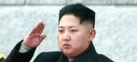
Las autoridades de Corea del Norte han invitado al Organismo Internacional de Energía Atómica (OIEA) a que realice una visita al país, tres años después de expulsar a los inspectores que verificaban el programa nuclear del país asiático.
"Recibimos una invitación el 16 de marzo. Vamos a discutir los detalles de la visita con Corea del Norte y con las otras partes implicadas", ha anunciado este lunes en Viena Gill Tudor, portavoz del organismo atómico de la ONU. La portavoz no precisó más información sobre el contenido de la invitación de Pyongyang ni si el propio director del OIEA, Yukiya Amano, viajará en persona a Corea del Norte.
La invitación de Corea del Norte llega después de que el pasado 29 de febrero anunciara que acepta suspender temporalmente sus actividades de enriquecimiento de uranio, las pruebas nucleares y los test con misiles de largo alcance, un paso al que Estados Unidos responderá con el envío de ayuda humanitaria.
Ya el pasado día 13, las autoridades norcoreanas se refirieron a que los inspectores internacionales podrían volver al país "en un futuro próximo". Desde el OIEA, Amano ha insistido en la disposición del OIEA a verificar el parón atómico del país comunista y que sus inspectores están preparados para regresar a la central nuclear de Yongbyon.
En abril de 2009, Corea del Norte rompió su colaboración con el OIEA y expulsó a los inspectores que vigilaban la actividad en ese reactor.
Seúl vincula un satélite al asunto nuclear
La Oficina Presidencial de Corea del Sur, por otro lado, ha condenado el anuncio del lanzamiento de un satélite norcoreano el próximo abril y lo definió como una "grave provocación" orientada al desarrollo de armas nucleares del país comunista.
"Nuestro Gobierno define el llamado plan de lanzamiento de satélite norcoreano como una grave provocación para desarrollar un soporte de lanzamiento de larga distancia de armas nucleares con tecnología de misiles balísticos", afirmó el portavoz presidencial, Park Jeong-ha, en declaraciones recogidas por la agencia Yonhap.
El pasado viernes Corea del Norte comunicó que lanzará un satélite con motivo del centenario del nacimiento del fundador del país, Kim Il-sung, que se celebra el 15 de abril, desde una zona junto al Mar Amarillo cercana a la frontera con China.

2012-03-19T19:59:06Z
Sarkozy: "El autor de la matanza de Toulouse es el mismo que el de los últimos dos ataques"
Sarkozy: "El autor de la matanza de Toulouse es el mismo que el de los últimos dos ataques"
AGENCIAS / VÍDEO: ATLAS
El presidente francés, que suspende su campaña hasta el miércoles, ha activado la alerta antiterrorista al máximo nivel en el suroeste francés.
Sarkozy describe el tiroteo de Toulouse como una "tragedia nacional" y afirma que en Francia "no se asesina a niños sin rendir cuentas".
Rajoy ha enviado, desde la celebración de "La Pepa" en Cádiz, su pésame a Sarkozy por las víctimas del tiroteo en Toulouse.
Cuatro muertos, tres de ellos niños, en un tiroteo en una escuela judía.
En Toulouse y Montauban se usó la misma arma y la misma moto.
El presidente de Francia y candidato a la reelección al cargo, Nicolas Sarkozy, ha afirmado este lunes que la motivación antisemita en el tiroteo que ha costado la vida a tres niños y un adulto frentea un colegio judío de Toulouse es "evidente" y aseguró que su autor es el responsable igualmente de los otros dos atentados recientes en la región.En una comparecencia en el Palacio del Elíseo, sede de la presidencia, indicó que las informaciones que le han transmitido las autoridades judiciales y policiales permiten afirmar que "una misma persona y una misma arma" mataron a tres militares la semana pasada y a cuatro personas esta mañana. Sarkozy ha indicado que uno de los militares que murieron en los tiroteos anteriores era de origen caribeño y que los otros dos eran musulmanes.El presidente francés había explicado anteriomente que el tiroteo se trata de "una tragedia nacional". Sarkozy ha asegurado que "se va a hacer absolutamente todo lo posible para encontrar" al autor de los disparos. Sarkozy ha anunciado que este martes se guardará un minuto de silencio en todos los colegios del país "en memoria de los niños de este colegio". "Son nuestros hijos, no son simplemente vuestros hijos (...). En el territorio de la República no se asesina a niños de esa manera sin rendir cuentas por ello", ha subrayado Sarkozy, según los medios franceses.El jefe de Estado estaba acompañado de numerosas personalidades, entre ellas el presidente del Consejo Representativo de las Instituciones Judías de Francia, Richard Prasquier. "Me gustaría decir a todas las autoridades de las comunidades judías lo cerca que nos sentimos de ellas", ha declarado."No debemos ceder frente al terror (...), los colegios deben continuar funcionando, las personas deben poder practicar su religión", ha agregado. Además, el presidente del Consejo francés del Culto Musulmán, Mohamed Musaui, se declaró "horrorizado" por este "acto criminal indescriptible" y expresó su solidaridad y la de los musulmanes de Francia con el conjunto de la comunidad judía.Por su parte, el candidato socialista a las Presidenciales, François Hollande denunció como "antisemita" ese "enorme drama" y subrayó que con él "toda Francia ha sido atacada". Hollande, favorito de esos comicios según los últimos sondeos, pidió "una respuesta común y firme de toda la República" para dar con ese "asesino", que según las primeras investigaciones utilizó el mismo arma y la misma motocicleta que las usadas la semana pasada en los otros dos tiroteos.En la misma línea de unión se pronunció también la candidata ultraderechista, Marine Le Pen, para quien "en estos momentos no hay derecha o izquierda", porque todos los franceses "están afectados y todo el mundo está horrorizado" en su empatía con las víctimas de ese drama.Suspende la campaña hasta el miércolesSarkozy ha anunciado que suspende su participación en la campaña de las elecciones presidenciales por el tiroteo. Así lo ha asegurado tras mantener una reunión de urgencia con Fillon, y con altos cargos de los Ministerio de Justicia, Interior y Defensa.Sarkozy ha avanzado además que se han adoptado medidas de seguridad "excepcionales" en el suroeste del país tras la "tragedia" sucedida este lunes en Toulouse. Entre otras medias, ha decidido elevarse el plan antiterrorista al máximo nivel.La suspensión de la campaña electoral del candidato de la UMP se mantendrá por lo menos hasta el miércoles, cuando se prevé que se celebre el funeral por los cuatro fallecidos. "Ha sido un acto odioso que no quedará impune", ha aseverado el presidente francés.Rajoy envía sus condolenciasEl presidente del Gobierno, Mariano Rajoy, ha enviado un telegrama al presidente de Francia, Nicolas Sarkozy, para trasladarle sus condolencias. En su telegrama, Rajoy expresa la condena del Gobierno por la tragedia en la escuela Ozar Hatorah y manda también sus "más sentidas condolencias" a las familias de los fallecidos, a la comunidad judía y al conjunto de la nación francesa. "El Gobierno de España condena los hechos y ofrece su apoyo al Gobierno de Francia y a sus fuerzas de seguridad para la detención de los responsables de unos asesinatos que nos han conmocionado por su crueldad", señala en el telegrama. El jefe del Ejecutivo desea también el pronto restablecimiento de los heridos.
AGENCIAS / VÍDEO: ATLAS
- El presidente francés, que suspende su campaña hasta el miércoles, ha activado la alerta antiterrorista al máximo nivel en el suroeste francés.
- Sarkozy describe el tiroteo de Toulouse como una "tragedia nacional" y afirma que en Francia "no se asesina a niños sin rendir cuentas".
- Rajoy ha enviado, desde la celebración de "La Pepa" en Cádiz, su pésame a Sarkozy por las víctimas del tiroteo en Toulouse.
- Cuatro muertos, tres de ellos niños, en un tiroteo en una escuela judía.
- En Toulouse y Montauban se usó la misma arma y la misma moto.

El presidente de Francia y candidato a la reelección al cargo, Nicolas Sarkozy, ha afirmado este lunes que la motivación antisemita en el tiroteo que ha costado la vida a tres niños y un adulto frentea un colegio judío de Toulouse es "evidente" y aseguró que su autor es el responsable igualmente de los otros dos atentados recientes en la región.
En una comparecencia en el Palacio del Elíseo, sede de la presidencia, indicó que las informaciones que le han transmitido las autoridades judiciales y policiales permiten afirmar que "una misma persona y una misma arma" mataron a tres militares la semana pasada y a cuatro personas esta mañana. Sarkozy ha indicado que uno de los militares que murieron en los tiroteos anteriores era de origen caribeño y que los otros dos eran musulmanes.
El presidente francés había explicado anteriomente que el tiroteo se trata de "una tragedia nacional". Sarkozy ha asegurado que "se va a hacer absolutamente todo lo posible para encontrar" al autor de los disparos.
Sarkozy ha anunciado que este martes se guardará un minuto de silencio en todos los colegios del país "en memoria de los niños de este colegio". "Son nuestros hijos, no son simplemente vuestros hijos (...). En el territorio de la República no se asesina a niños de esa manera sin rendir cuentas por ello", ha subrayado Sarkozy, según los medios franceses.
El jefe de Estado estaba acompañado de numerosas personalidades, entre ellas el presidente del Consejo Representativo de las Instituciones Judías de Francia, Richard Prasquier. "Me gustaría decir a todas las autoridades de las comunidades judías lo cerca que nos sentimos de ellas", ha declarado.
"No debemos ceder frente al terror (...), los colegios deben continuar funcionando, las personas deben poder practicar su religión", ha agregado. Además, el presidente del Consejo francés del Culto Musulmán, Mohamed Musaui, se declaró "horrorizado" por este "acto criminal indescriptible" y expresó su solidaridad y la de los musulmanes de Francia con el conjunto de la comunidad judía.
Por su parte, el candidato socialista a las Presidenciales, François Hollande denunció como "antisemita" ese "enorme drama" y subrayó que con él "toda Francia ha sido atacada". Hollande, favorito de esos comicios según los últimos sondeos, pidió "una respuesta común y firme de toda la República" para dar con ese "asesino", que según las primeras investigaciones utilizó el mismo arma y la misma motocicleta que las usadas la semana pasada en los otros dos tiroteos.
En la misma línea de unión se pronunció también la candidata ultraderechista, Marine Le Pen, para quien "en estos momentos no hay derecha o izquierda", porque todos los franceses "están afectados y todo el mundo está horrorizado" en su empatía con las víctimas de ese drama.
Suspende la campaña hasta el miércoles
Sarkozy ha anunciado que suspende su participación en la campaña de las elecciones presidenciales por el tiroteo. Así lo ha asegurado tras mantener una reunión de urgencia con Fillon, y con altos cargos de los Ministerio de Justicia, Interior y Defensa.
Sarkozy ha avanzado además que se han adoptado medidas de seguridad "excepcionales" en el suroeste del país tras la "tragedia" sucedida este lunes en Toulouse. Entre otras medias, ha decidido elevarse el plan antiterrorista al máximo nivel.
La suspensión de la campaña electoral del candidato de la UMP se mantendrá por lo menos hasta el miércoles, cuando se prevé que se celebre el funeral por los cuatro fallecidos. "Ha sido un acto odioso que no quedará impune", ha aseverado el presidente francés.
Rajoy envía sus condolencias
El presidente del Gobierno, Mariano Rajoy, ha enviado un telegrama al presidente de Francia, Nicolas Sarkozy, para trasladarle sus condolencias. En su telegrama, Rajoy expresa la condena del Gobierno por la tragedia en la escuela Ozar Hatorah y manda también sus "más sentidas condolencias" a las familias de los fallecidos, a la comunidad judía y al conjunto de la nación francesa.
"El Gobierno de España condena los hechos y ofrece su apoyo al Gobierno de Francia y a sus fuerzas de seguridad para la detención de los responsables de unos asesinatos que nos han conmocionado por su crueldad", señala en el telegrama. El jefe del Ejecutivo desea también el pronto restablecimiento de los heridos.
2012-03-19T19:15:22Z
El legado de Einstein, al alcance de todos gracias a Internet
El legado de Einstein, al alcance de todos gracias a Internet
EFE
La Universidad Hebrea de Jerusalén anunció este lunes el lanzamiento de un archivo en Internet con todos sus documentos personales y obras científicas.
"Expone su trabajo, su escritura y las correcciones que hacía a mano" en las alrededor de 7.000 páginas que ya han sido subidas a la Red.
Hasta finales de 2012 serán subidos al nuevo sitio de Internet 80.000 páginas.
En un afán de "universalizar" el legado que dejó en sus manos Albert Einstein, la Universidad Hebrea de Jerusalén anunció este lunes el lanzamiento de un avanzado archivo en Internet con todos sus documentos personales y obras científicas.El archivo digital, que puede ser visitado en su página web, muestra a "un genio (en su faceta más) humana", según el presidente de la Universidad Hebrea, Menajem Ben Sasson, quien destacó que este proyecto trata de "universalizar el conocimiento". "Expone su trabajo, su escritura y las correcciones que hacía a mano", explicó, en rueda de prensa, sobre las alrededor de 7.000 páginas que ya han sido subidas a la red y están clasificadas por materias: relaciones con la Universidad Hebrea, trabajo científico, vida personal, vida pública y el pueblo judío.El objetivo es colgar en la red toda la obra, documentos personales y correspondencia de un hombre que revolucionó la ciencia del siglo XX con teorías, como la de la relatividad, que siguen en pie hasta el día de hoy. "Lanzamos un proyecto que nos permite exponer al público los tesoros del conocimiento. Einstein dejó el archivo para darlo a conocer al mundo y lo hacemos de la mejor manera posible: en la red", subrayó Ben Sason.Entre los papeles del científico, una carta de los años cuarenta al palestino Azmi El-Nashashibi, editor del periódico "El Falastin", en la que propone una original solución al conflicto entre árabes y judíos.También está una carta a la comunidad judía de Berlín en la que explica las diferencias entre la "religión judía" y el "nacionalismo judío", un discurso sobre recaudación de donaciones para el movimiento sionista, y sus relaciones con la Universidad Hebrea, que él ayudó a fundar entre 1918 y 1925.El físico Hanoch Gutfreund, presidente del Comité Académico de los Archivos de Albert Einstein, explicó que la relación del científico con la Universidad fue "muy profunda". De hecho, con sólo teclear en el buscador el nombre de la institución jerosolimitana salen a la luz más de 5.000 referencias.Una cifra parecida de páginas de las que son publicadas sobre su vida y correspondencia personal, con picantes cartas a sus amantes, faceta menos conocida del científico judeo-alemán. En este último caso se trata de una correspondencia publicada por primera vez en 2006, veinte años después de que falleciera la hija que su segunda esposa tenía de un anterior matrimonio.Hasta finales de 2012 serán subidos al nuevo sitio de Internet unas 80.000 páginas, en una iniciativa en la que participan la editorial de la Universidad de Princeton, que publica en papel los trabajos del investigador fallecido en 1955, y el Einstein Papers Project (EPP) del Instituto Tecnológico de California, que los edita.Ambas instituciones académicas estadounidenses, así como las asociaciones de amigos de la Universidad Hebrea y las distintas embajadas de Israel se han sumado al lanzamiento del nuevo sitio con actos públicos por todo el mundo para festejar la "democratización" de este legado.
EFE
- La Universidad Hebrea de Jerusalén anunció este lunes el lanzamiento de un archivo en Internet con todos sus documentos personales y obras científicas.
- "Expone su trabajo, su escritura y las correcciones que hacía a mano" en las alrededor de 7.000 páginas que ya han sido subidas a la Red.
- Hasta finales de 2012 serán subidos al nuevo sitio de Internet 80.000 páginas.
En un afán de "universalizar" el legado que dejó en sus manos Albert Einstein, la Universidad Hebrea de Jerusalén anunció este lunes el lanzamiento de un avanzado archivo en Internet con todos sus documentos personales y obras científicas.
El archivo digital, que puede ser visitado en su página web, muestra a "un genio (en su faceta más) humana", según el presidente de la Universidad Hebrea, Menajem Ben Sasson, quien destacó que este proyecto trata de "universalizar el conocimiento".
"Expone su trabajo, su escritura y las correcciones que hacía a mano", explicó, en rueda de prensa, sobre las alrededor de 7.000 páginas que ya han sido subidas a la red y están clasificadas por materias: relaciones con la Universidad Hebrea, trabajo científico, vida personal, vida pública y el pueblo judío.
El objetivo es colgar en la red toda la obra, documentos personales y correspondencia de un hombre que revolucionó la ciencia del siglo XX con teorías, como la de la relatividad, que siguen en pie hasta el día de hoy. "Lanzamos un proyecto que nos permite exponer al público los tesoros del conocimiento. Einstein dejó el archivo para darlo a conocer al mundo y lo hacemos de la mejor manera posible: en la red", subrayó Ben Sason.
Entre los papeles del científico, una carta de los años cuarenta al palestino Azmi El-Nashashibi, editor del periódico "El Falastin", en la que propone una original solución al conflicto entre árabes y judíos.
También está una carta a la comunidad judía de Berlín en la que explica las diferencias entre la "religión judía" y el "nacionalismo judío", un discurso sobre recaudación de donaciones para el movimiento sionista, y sus relaciones con la Universidad Hebrea, que él ayudó a fundar entre 1918 y 1925.
El físico Hanoch Gutfreund, presidente del Comité Académico de los Archivos de Albert Einstein, explicó que la relación del científico con la Universidad fue "muy profunda". De hecho, con sólo teclear en el buscador el nombre de la institución jerosolimitana salen a la luz más de 5.000 referencias.
Una cifra parecida de páginas de las que son publicadas sobre su vida y correspondencia personal, con picantes cartas a sus amantes, faceta menos conocida del científico judeo-alemán. En este último caso se trata de una correspondencia publicada por primera vez en 2006, veinte años después de que falleciera la hija que su segunda esposa tenía de un anterior matrimonio.
Hasta finales de 2012 serán subidos al nuevo sitio de Internet unas 80.000 páginas, en una iniciativa en la que participan la editorial de la Universidad de Princeton, que publica en papel los trabajos del investigador fallecido en 1955, y el Einstein Papers Project (EPP) del Instituto Tecnológico de California, que los edita.
Ambas instituciones académicas estadounidenses, así como las asociaciones de amigos de la Universidad Hebrea y las distintas embajadas de Israel se han sumado al lanzamiento del nuevo sitio con actos públicos por todo el mundo para festejar la "democratización" de este legado.
2012-03-19T18:28:16Z
Diseñan en EE UU un reloj con precisión cien veces mayor que los actuales atómicos
Diseñan en EE UU un reloj con precisión cien veces mayor que los actuales atómicos
AGENCIAS
Podría añadir precisión al sistema de posicionamiento global (GPS).
El reloj nuclear podría ser útil en ciertas formas de comunicaciones confidenciales.
También servirá para el estudio de teorías fundamentales de la física.
Un equipo internacional de científicos trabaja en la construcción de un reloj con un margen de imprecisión de una décima de segundo en 14.000 millones de años, según ha informado este lunes el Instituto Tecnológico de Georgia (EE UU). La precisión extrema de este reloj, cien veces superior a la de los actuales relojes atómicos, proviene del núcleo de un solo ion de torio, añade un artículo que publicará la revista Physical Review Letters. Además de los físicos del Instituto Tecnológico de Georgia, en Alabama, participan en el proyecto físicos de la Universidad de Nueva Gales (Australia), del Departamento de Física de la Universidad de Nevada, en un trabajo financiado en parte por la Oficina Naval de Investigaciones y la Fundación Nacional de Ciencias de EE UU. El reloj nuclear podría ser útil en ciertas formas de comunicaciones confidenciales y para el estudio de teorías fundamentales de la física.Asimismo podría añadir precisión al sistema de posicionamiento global (GPS por su sigla en inglés), que se sustenta ahora en relojes atómicos. Los relojes mecánicos emplean un péndulo que provee las oscilaciones con las que se mide el tiempo, minetras que los modernos son cristales de cuarzo los que proveen las oscilaciones de alta frecuencia que operan como una horquilla para afinar instrumentos musicales en lugar del antiguo péndulo. La precisión de los relojes atómicos proviene de las oscilaciones de los electrones en los átomos inducidas por rayo láser. Pero a estos electrones pueden afectarles los campos magnéticos y eléctricos, y por los relojes atómicos a veces pierden tiempo, una desviación de unos cuatro segundos durante la existencia del universo. Pero los neutrones son mucho más pesados que los electrones y están agrupados con más densidad en el núcleo atómico de manera que son menos susceptibles que desviaciones por causas ambientales. Según el artículo del Instituto Tecnológico de Georgia, para crear las oscilaciones los investigadores planifican el uso de un láser que opera en frecuencias de petaherzios -10 elevado a la 15 potencia, ó 1.000.000.000.000.000 oscilaciones por segundo- para incitar al núcleo de un ion de torio 229 a un estado energético más elevado. La "sintonización" de un láser que cree estos estados de energía más altos permitiría que los científicos fijen su frecuencia con mucha precisión, y esa frecuencia se usaría para marcar el tiempo. Los diseñadores encaran otro problema: para que el reloj nuclear sea estable hay que mantenerlo a temperaturas muy bajas de apenas decenas de microkelvin (10 elevado a -6 grados Kelvin o -272 por 10 elevado a -6 grados centígrados).
AGENCIAS
- Podría añadir precisión al sistema de posicionamiento global (GPS).
- El reloj nuclear podría ser útil en ciertas formas de comunicaciones confidenciales.
- También servirá para el estudio de teorías fundamentales de la física.
Un equipo internacional de científicos trabaja en la construcción de un reloj con un margen de imprecisión de una décima de segundo en 14.000 millones de años, según ha informado este lunes el Instituto Tecnológico de Georgia (EE UU). La precisión extrema de este reloj, cien veces superior a la de los actuales relojes atómicos, proviene del núcleo de un solo ion de torio, añade un artículo que publicará la revista Physical Review Letters.
Además de los físicos del Instituto Tecnológico de Georgia, en Alabama, participan en el proyecto físicos de la Universidad de Nueva Gales (Australia), del Departamento de Física de la Universidad de Nevada, en un trabajo financiado en parte por la Oficina Naval de Investigaciones y la Fundación Nacional de Ciencias de EE UU. El reloj nuclear podría ser útil en ciertas formas de comunicaciones confidenciales y para el estudio de teorías fundamentales de la física.
Asimismo podría añadir precisión al sistema de posicionamiento global (GPS por su sigla en inglés), que se sustenta ahora en relojes atómicos. Los relojes mecánicos emplean un péndulo que provee las oscilaciones con las que se mide el tiempo, minetras que los modernos son cristales de cuarzo los que proveen las oscilaciones de alta frecuencia que operan como una horquilla para afinar instrumentos musicales en lugar del antiguo péndulo.
La precisión de los relojes atómicos proviene de las oscilaciones de los electrones en los átomos inducidas por rayo láser. Pero a estos electrones pueden afectarles los campos magnéticos y eléctricos, y por los relojes atómicos a veces pierden tiempo, una desviación de unos cuatro segundos durante la existencia del universo.
Pero los neutrones son mucho más pesados que los electrones y están agrupados con más densidad en el núcleo atómico de manera que son menos susceptibles que desviaciones por causas ambientales. Según el artículo del Instituto Tecnológico de Georgia, para crear las oscilaciones los investigadores planifican el uso de un láser que opera en frecuencias de petaherzios -10 elevado a la 15 potencia, ó 1.000.000.000.000.000 oscilaciones por segundo- para incitar al núcleo de un ion de torio 229 a un estado energético más elevado.
La "sintonización" de un láser que cree estos estados de energía más altos permitiría que los científicos fijen su frecuencia con mucha precisión, y esa frecuencia se usaría para marcar el tiempo. Los diseñadores encaran otro problema: para que el reloj nuclear sea estable hay que mantenerlo a temperaturas muy bajas de apenas decenas de microkelvin (10 elevado a -6 grados Kelvin o -272 por 10 elevado a -6 grados centígrados).
2012-03-19T17:35:37Z
Los espermatozoides realizan cálculos complejos a partir de la concentración de calcio
Los espermatozoides realizan cálculos complejos a partir de la concentración de calcio
EFE
"El 'timón' de los espermatozoides se mueve al son de la velocidad de cambio del calcio", afirma el científico español Luis Álvarez.
El óvulo libera atrayentes que cambian la concentración de calcio en el esperma, pero éste no reacciona a la concentración, sino a los cambios de ésta.
"El cálculo diferencial no lo realizaron por primera vez en el siglo XVII, ya lo hacían los espermatozoides hace 400 millones de años", señala Álvarez.
Un equipo científico internacional liderado por el español Luis Álvarez y ligado al Instituto Max Planck alemán ha descubierto que los espermatozoides son capaces de realizar cálculos complejos.El equipo del Centro Europeo de Estudios e Investigación Avanzados (Caesar, por sus siglas en inglés) de Bonn determinó que cuando el óvulo libera atrayentes que modifican la concentración de calcio en el interior de los espermatozoides, éstos no reaccionan a la concentración en sí, sino a los cambios que se producen en esta."Lo que miden son las tasas de cambio a lo largo del tiempo, es decir, cómo de rápido o de lento cambia la concentración de calcio que entra en la célula del exterior. En lenguaje matemático, lo que hacen es calcular la derivada temporal", precisa el científico español.Así, "en función del valor de la tasa de cambio, alteran la forma en que mueven la cola y cambian de dirección, en otras palabras, el 'timón' de los espermatozoides se mueve al son de la velocidad de cambio del calcio"."Resulta bastante cómico pensar que el cálculo diferencial no lo realizaron por primera vez en el siglo XVII, sino que ya lo hacían los espermatozoides hace más de 400 millones de años", señaló.Por otra parte, Álvarez precisó que "los espermatozoides, como muchas otras células, calculan multitud de parámetros". "El cómo los miden no esta siempre claro, pero lo más habitual es que midan los valores absolutos y no la velocidad de cambio", dijo.El fenómeno descubierto por el equipo de científicos ha sido observado por el momento únicamente en esperma de varias especies marítimas. "Es por ello que estamos todavía realizando esfuerzos para conocer el espectro de especies que se comportan de este modo" y, por lo tanto, si este fenómeno se extiende también al esperma humano."Las repercusiones globales de este descubrimiento... el tiempo lo dirá", concluye el científico español.
EFE
- "El 'timón' de los espermatozoides se mueve al son de la velocidad de cambio del calcio", afirma el científico español Luis Álvarez.
- El óvulo libera atrayentes que cambian la concentración de calcio en el esperma, pero éste no reacciona a la concentración, sino a los cambios de ésta.
- "El cálculo diferencial no lo realizaron por primera vez en el siglo XVII, ya lo hacían los espermatozoides hace 400 millones de años", señala Álvarez.
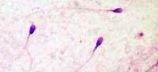
Un equipo científico internacional liderado por el español Luis Álvarez y ligado al Instituto Max Planck alemán ha descubierto que los espermatozoides son capaces de realizar cálculos complejos.
El equipo del Centro Europeo de Estudios e Investigación Avanzados (Caesar, por sus siglas en inglés) de Bonn determinó que cuando el óvulo libera atrayentes que modifican la concentración de calcio en el interior de los espermatozoides, éstos no reaccionan a la concentración en sí, sino a los cambios que se producen en esta.
"Lo que miden son las tasas de cambio a lo largo del tiempo, es decir, cómo de rápido o de lento cambia la concentración de calcio que entra en la célula del exterior. En lenguaje matemático, lo que hacen es calcular la derivada temporal", precisa el científico español.
Así, "en función del valor de la tasa de cambio, alteran la forma en que mueven la cola y cambian de dirección, en otras palabras, el 'timón' de los espermatozoides se mueve al son de la velocidad de cambio del calcio".
"Resulta bastante cómico pensar que el cálculo diferencial no lo realizaron por primera vez en el siglo XVII, sino que ya lo hacían los espermatozoides hace más de 400 millones de años", señaló.
Por otra parte, Álvarez precisó que "los espermatozoides, como muchas otras células, calculan multitud de parámetros". "El cómo los miden no esta siempre claro, pero lo más habitual es que midan los valores absolutos y no la velocidad de cambio", dijo.
El fenómeno descubierto por el equipo de científicos ha sido observado por el momento únicamente en esperma de varias especies marítimas. "Es por ello que estamos todavía realizando esfuerzos para conocer el espectro de especies que se comportan de este modo" y, por lo tanto, si este fenómeno se extiende también al esperma humano.
"Las repercusiones globales de este descubrimiento... el tiempo lo dirá", concluye el científico español.
2012-03-19T16:13:13Z
Toulouse se suma a la larga lista de ciudades europeas que han sufrido un violento tiroteo
Toulouse se suma a la larga lista de ciudades europeas que han sufrido un violento tiroteo
20MINUTOS.ES
El tiroteo de Tolouse se une a tragedias como las de Lieja o Cumbria.
El de Oslo es el tiroteo con más víctimas mortales de los últimos años.
Cuatro fallecidos en un tiroteo frente a una escuela judía en Toulouse.
El tiroteo de este lunes frente a una escuela judía en la ciudad de Toulouse, que se ha saldado con al menos cuatro muertos, se suma a una larga lista de violentos incidentes que han tenido lugar en todo el continente europeo, y especialmente en Francia, que en el último mes ha sufrido tres ataques que podrían haber sido cometidos por el mismo sospechoso.Montauban (Francia)El pasado 15 de marzo, dos militares franceses murieron abatidos por disparos mientras retiraban dinero de un cajero automático en el municipio de Montauban, Francia. El incidente ocurrió cerca del cuartel del 17º Regimiento de Ingenieros Paracaidistas, al que pertenecían las víctimas. Las primeras investigaciones apuntan a que el autor habría sido la misma persona que en el caso de la escuela judía de Toulouse. Los detalles que se conocen es que se trataría de un individuo que circula en una moto con el casco puesto y la visera bajada para evitar ser reconocido.Toulouse (Francia)El autor de disparos tanto frente a la escuela judía como en el asesinato de los dos militares podría ser el mismo que cuatro días antes, el domingo 11, asesinó a otro soldado en Toulouse. Las balas habrían sido disparadas por la misma pistola, con munición del calibre 11.43 milímetros, que coincidiría en los tres casos.Oslo (Noruega)El tiroteo más sangriento de la historia de Noruega tuvo lugar en la capital del país el 22 de julio de 2011. Anders Behring Breivik, un empresario noruego de 32 años, asesinó a 77 personas, 69 de ellas con una pistola y un rifle en la isla de Utoya, donde Breivik estuvo más de una hora disparando contra todo aquél que se que se cruzaba en su camino.Lieja (Bélgica)El 13 de diciembre de 2011, un ataque con armas de fuego y artefactos explosivos en el centro de la ciudad belga de Lieja dejó cinco muertos y 123 heridos. El autor del ataque fue identificado como Nordine Amrani, quien se pegó un tiro en la cabeza tras lanzar varios artefactos explosivos en la céntrica plaza Saint Lambert y abrir fuego contra los viandantes con un fusil kalashnikov. Amrani, de 32 años de edad, tenía antecedentes penales por posesión de armas y droga.Cumbria (Reino Unido)Derrick Bird, un taxista de 52 años, mató a 12 personas e hirió a otras 25 en West Cumbria (norte de Ingalterra) antes de acabar con su vida el 2 de junio de 2010. Una discusión con otros taxistas pudo haber desencadenado la masacre. Durante tres horas, Bird viajó por varias poblaciones de la zona, matando a su hermano gemelo, David, al abogado de su familia y a otra decena de personas que se cruzaron por su camino. El taxista se quitó la vida en un bosque con la escopeta que llevaba tras estrellar su coche.Olot (España)Pere Puig, un albañil de 57 años, disparó con un rifle a cuatro personas en el bar La cuina de l'Anna y en la oficina de la Caja de Ahorros del Mediterráneo de la localidad de Olot (Girona) el 15 de diciembre de 2010. Puig, que justificó sus crímenes por los problemas económicos que atravesaba, mató sin mediar palabra a Joan y Ángel Tubert, los constructores que le habían despedido, en la cafetería, y tiroteó a dos trabajadores de la entidad bancaria con los que había intentado negociar el día anterior el cobro de un cheque que no tenía fondos.Winnenden (Alemania)El 11 de marzo de 2009, Tim K., de 17 años, irrumpió armado y enfundado en un traje paramilitar negro en la escuela Albertville, situada en la ciudad Winnenden, en el sur de Alemania y mató a tiros a 12 personas, entre ellos varios estudiantes. Después, disparó una persona en un centro psiquiátrico cercano, huyó a pie hacia el centro de Winnenden y finalmente fue abatido en un tiroteo con la policía, donde murieron otras dos personas. En total, fueron 16 los fallecidos, incluido el autor del crimen.Alphen ann den Rijn (Holanda)Tristan van der Vlis, un hombre de 24 años, asesinó a seis personas con una metralleta en un centro comercial de la ciudad holandesa de Alphen ann den Rijn. El tiroteo tuvo lugar pasado el mediodía en la entrada principal del edificio, conocido como Ridderhof, una zona que se encontraba muy concurrida a esas horas. Posteriormente, Van der Vils se disparó un tiro en la cabeza.
20MINUTOS.ES
- El tiroteo de Tolouse se une a tragedias como las de Lieja o Cumbria.
- El de Oslo es el tiroteo con más víctimas mortales de los últimos años.
- Cuatro fallecidos en un tiroteo frente a una escuela judía en Toulouse.
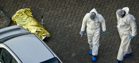
El tiroteo de este lunes frente a una escuela judía en la ciudad de Toulouse, que se ha saldado con al menos cuatro muertos, se suma a una larga lista de violentos incidentes que han tenido lugar en todo el continente europeo, y especialmente en Francia, que en el último mes ha sufrido tres ataques que podrían haber sido cometidos por el mismo sospechoso.
Montauban (Francia)
El pasado 15 de marzo, dos militares franceses murieron abatidos por disparos mientras retiraban dinero de un cajero automático en el municipio de Montauban, Francia. El incidente ocurrió cerca del cuartel del 17º Regimiento de Ingenieros Paracaidistas, al que pertenecían las víctimas. Las primeras investigaciones apuntan a que el autor habría sido la misma persona que en el caso de la escuela judía de Toulouse. Los detalles que se conocen es que se trataría de un individuo que circula en una moto con el casco puesto y la visera bajada para evitar ser reconocido.
Toulouse (Francia)
El autor de disparos tanto frente a la escuela judía como en el asesinato de los dos militares podría ser el mismo que cuatro días antes, el domingo 11, asesinó a otro soldado en Toulouse. Las balas habrían sido disparadas por la misma pistola, con munición del calibre 11.43 milímetros, que coincidiría en los tres casos.
Oslo (Noruega)
El tiroteo más sangriento de la historia de Noruega tuvo lugar en la capital del país el 22 de julio de 2011. Anders Behring Breivik, un empresario noruego de 32 años, asesinó a 77 personas, 69 de ellas con una pistola y un rifle en la isla de Utoya, donde Breivik estuvo más de una hora disparando contra todo aquél que se que se cruzaba en su camino.
Lieja (Bélgica)
El 13 de diciembre de 2011, un ataque con armas de fuego y artefactos explosivos en el centro de la ciudad belga de Lieja dejó cinco muertos y 123 heridos. El autor del ataque fue identificado como Nordine Amrani, quien se pegó un tiro en la cabeza tras lanzar varios artefactos explosivos en la céntrica plaza Saint Lambert y abrir fuego contra los viandantes con un fusil kalashnikov. Amrani, de 32 años de edad, tenía antecedentes penales por posesión de armas y droga.
Cumbria (Reino Unido)
Derrick Bird, un taxista de 52 años, mató a 12 personas e hirió a otras 25 en West Cumbria (norte de Ingalterra) antes de acabar con su vida el 2 de junio de 2010. Una discusión con otros taxistas pudo haber desencadenado la masacre. Durante tres horas, Bird viajó por varias poblaciones de la zona, matando a su hermano gemelo, David, al abogado de su familia y a otra decena de personas que se cruzaron por su camino. El taxista se quitó la vida en un bosque con la escopeta que llevaba tras estrellar su coche.
Olot (España)
Pere Puig, un albañil de 57 años, disparó con un rifle a cuatro personas en el bar La cuina de l'Anna y en la oficina de la Caja de Ahorros del Mediterráneo de la localidad de Olot (Girona) el 15 de diciembre de 2010. Puig, que justificó sus crímenes por los problemas económicos que atravesaba, mató sin mediar palabra a Joan y Ángel Tubert, los constructores que le habían despedido, en la cafetería, y tiroteó a dos trabajadores de la entidad bancaria con los que había intentado negociar el día anterior el cobro de un cheque que no tenía fondos.
Winnenden (Alemania)
El 11 de marzo de 2009, Tim K., de 17 años, irrumpió armado y enfundado en un traje paramilitar negro en la escuela Albertville, situada en la ciudad Winnenden, en el sur de Alemania y mató a tiros a 12 personas, entre ellos varios estudiantes. Después, disparó una persona en un centro psiquiátrico cercano, huyó a pie hacia el centro de Winnenden y finalmente fue abatido en un tiroteo con la policía, donde murieron otras dos personas. En total, fueron 16 los fallecidos, incluido el autor del crimen.
Alphen ann den Rijn (Holanda)
Tristan van der Vlis, un hombre de 24 años, asesinó a seis personas con una metralleta en un centro comercial de la ciudad holandesa de Alphen ann den Rijn. El tiroteo tuvo lugar pasado el mediodía en la entrada principal del edificio, conocido como Ridderhof, una zona que se encontraba muy concurrida a esas horas. Posteriormente, Van der Vils se disparó un tiro en la cabeza.
2012-03-19T14:42:16Z
Liberadas las Damas de Blanco detenidas el domingo en Cuba
Liberadas las Damas de Blanco detenidas el domingo en Cuba
EFE
Habían detenido horas antes a 70 integrantes de este grupo disidente, incluida su portavoz Berta Soler.
Estos arrestros han tenido lugar una semana antes de que el Papa Benedicto XVI haga su visita histórica a la isla.
Las autoridades cubanas liberaron la noche del domingo a las más de 70 integrantes de las Damas de Blanco que fueron detenidas, entre ellas su portavoz, Berta Soler, según han informado a Efe fuentes de este grupo disidente. Decenas de integrantes de las Damas de Blanco fueron arrestadas durante el pasado fin de semana. Las detenciones comenzaron el sábado cuando el grupo intentó efectuar una marcha pacífica para conmemorar el noveno aniversario de la oleada represiva contra 75 opositores condenados durante la "Primavera Negra" de 2003. También ayer se produjeron nuevas detenciones cuando mujeres del grupo acudieron a la habanera iglesia de Santa Rita como hacen todos los domingos para escuchar misa y después realizar una caminata por la calle en defensa de los derechos humanos y abogar por la libertad de los presos políticos. Estos arrestos se han producido cuando falta una semana de la visita que efectuará el Papa Benedicto XVI a la isla. Laura Labrada, una de las portavoces del grupo e hija de la fallecida líder de las Damas, Laura Pollán, ha explicado a Efe que durante las detenciones, las autoridades insistieron en que el grupo "ya no tiene razón de existir porque todos los 75 (presos de la Primavera Negra) están liberados". Las Damas de Blanco mantienen su denuncia de que se ha producido en las últimas semanas "un agravamiento" de la represión contra la disidencia interna y especial contra ellas. En particular han denunciado acciones de hostigamiento, arrestos temporales, maltrato, actos de repudio, advertencias y amenazas de la policía política en La Habana, y también en otras provincias como Pinar del Río, en la ciudad central de Santa Clara y en las orientales Holguín y Santiago de Cuba. El grupo de mujeres disidentes ha informado que pidió al Papa Benedicto XVI que les conceda "un minuto" durante la visita que el Pontífice realizará del 26 al 28 de este mes a la isla.
EFE
- Habían detenido horas antes a 70 integrantes de este grupo disidente, incluida su portavoz Berta Soler.
- Estos arrestros han tenido lugar una semana antes de que el Papa Benedicto XVI haga su visita histórica a la isla.
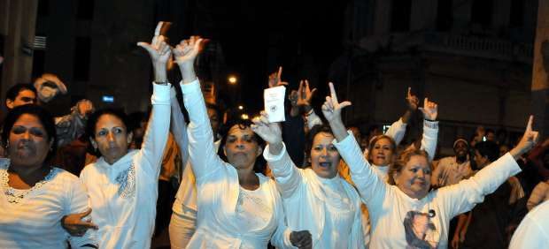
Las autoridades cubanas liberaron la noche del domingo a las más de 70 integrantes de las Damas de Blanco que fueron detenidas, entre ellas su portavoz, Berta Soler, según han informado a Efe fuentes de este grupo disidente.
Decenas de integrantes de las Damas de Blanco fueron arrestadas durante el pasado fin de semana. Las detenciones comenzaron el sábado cuando el grupo intentó efectuar una marcha pacífica para conmemorar el noveno aniversario de la oleada represiva contra 75 opositores condenados durante la "Primavera Negra" de 2003.
También ayer se produjeron nuevas detenciones cuando mujeres del grupo acudieron a la habanera iglesia de Santa Rita como hacen todos los domingos para escuchar misa y después realizar una caminata por la calle en defensa de los derechos humanos y abogar por la libertad de los presos políticos.
Estos arrestos se han producido cuando falta una semana de la visita que efectuará el Papa Benedicto XVI a la isla.
Laura Labrada, una de las portavoces del grupo e hija de la fallecida líder de las Damas, Laura Pollán, ha explicado a Efe que durante las detenciones, las autoridades insistieron en que el grupo "ya no tiene razón de existir porque todos los 75 (presos de la Primavera Negra) están liberados".
Las Damas de Blanco mantienen su denuncia de que se ha producido en las últimas semanas "un agravamiento" de la represión contra la disidencia interna y especial contra ellas.
En particular han denunciado acciones de hostigamiento, arrestos temporales, maltrato, actos de repudio, advertencias y amenazas de la policía política en La Habana, y también en otras provincias como Pinar del Río, en la ciudad central de Santa Clara y en las orientales Holguín y Santiago de Cuba.
El grupo de mujeres disidentes ha informado que pidió al Papa Benedicto XVI que les conceda "un minuto" durante la visita que el Pontífice realizará del 26 al 28 de este mes a la isla.
2012-03-19T10:55:41Z
El drama de las madres solteras en Marruecos:"Siempre seré la vergüenza del barrio"
El drama de las madres solteras en Marruecos:"Siempre seré la vergüenza del barrio"
EFE
"No me hago ilusiones sobre volver a mi casa y que los míos acepten a mi hijo", cuenta Amal de 23 años.
Cada día nacen 100 niños fuera del matrimonio y 24 son abandonados.
Hasta hace poco tenían que inscribirlos con una "X" como apellido.
Solidaridad Femenina (SF) es una organización pionera en defensa de las madres.
"Aunque mi padre me perdonara algún día por haber dado a luz estando soltera, yo seguiré siendo la vergüenza del barrio por haber manchado el honor de mi familia, así que no me hago ilusiones sobre volver a mi casa y que los míos acepten a mi hijo". Quien habla es Amal, que se quedó embarazada con 23 años y su novio la abandonó al enterarse, pero no piensa delatarlo: "Primero, porque es casado; segundo, porque si hago público su nombre mis hermanos irán a matarlo, y bastantes problemas he dado ya a mi familia". El primer reflejo de Amal, como el de todas las madres solteras, fue huir de su casa hasta llegar a Casablanca, la gran metrópolis marroquí donde una mujer con un pecado en el vientre puede encontrar el anonimato, primero, y más tarde una mano amiga. Tras un paso por una institución de monjas que ayudan discretamente a las mujeres como ella, ahora llama a las puertas de Solidaridad Femenina (SF), organización pionera en la defensa de las madres solteras. Dice Aicha Chenna, fundadora de SF, que cada día nacen en Marruecos 100 niños fuera del matrimonio, de los que 24 son abandonados, lo que se traduce en que un 11,4 % de nacimientos son hijos de solteras. Las cosas han mejorado levemente para las madres solteras en este país: ya no tienen obligación de inscribir a su hijo con la "X" como apellido; desde 2004, con la reforma del Código de la Familia, pueden darle un apellido ficticio que oculte su consideración de bastardos. Pero Chenna se queja de que la ley "está en manos de funcionarios, quienes con frecuencia complican mucho las cosas" a las madres solteras: por ejemplo, lo habitual es que se nieguen a aceptar test de ADN (muy caros y siempre costeados por la madre) para demostrar la paternidad y exijan en cambio "certificados de noviazgo" inexistentes. Algunas tienen historias aún más terribles que Amal, como Nezha, de 24 años, peluquera y analfabeta, embarazada tras ser violada por tres desconocidos una tarde, al salir de su trabajo, y también huida de su casa por miedo a un hermano "agresivo y drogadicto", pero resuelta a criar sola a una hija que ya tiene 24 días de edad. La opinión popular es implacable con las madres solteras (con frecuencia equiparadas con prostitutas) y muchas familias prefieren recurrir al aborto antes de que el vientre de una joven arroje una mancha sobre su reputación, se lamenta Chenna. Una vez oyó decir a una madre soltera que odiaba a su hijo con este argumento: "No puedo darle amor, solo he recibido odio en mi vida". Así que la principal preocupación de Solidaridad Femenina es dignificar a las madres solteras y reforzar su autoestima, enseñándoles durante tres años a leer si son analfabetas, además de un oficio (cocina, peluquería, pastelería y costura) mientras cuidan a sus hijos en una guardería. Al cabo de tres años, deben ser capaces de volar por su cuenta. Hay ahora cuarenta mujeres con sus niños acogidos por la institución en tres centros de Casablanca. Cada mujer cuesta a Solidaridad Femenina 4.000 dirhams mensuales (unos 400 euros), lo que se traduce en gastos anuales de 5 millones de dirhams, de los que SF solo financia la mitad, siendo el resto procedente de donaciones. Aicha Chenna recibió en el año 2000 amenazas, por teléfono y por escrito, de grupos islamistas que la acusaban de propagar el adulterio, pero no por ello se arredra: siendo nieta de un teólogo musulmán, le gusta repetir que "Dios crea como quiere, con quien quiere y cuando quiere", y lo apoya con versos del Corán. "Aquí hay mucha hipocresía: (los islamistas) utilizan la religión como les parece, pero he descubierto que también entre ellos hay madres solteras y hombres que se dicen virtuosos y luego abandonan a la mujer", sostiene. Sin embargo, el propio rey Mohamed VI se ha puesto en contacto con ella para pedirle que continúe con su tarea y donarle casi 2 millones de dirhams (200.000 euros) para su asociación, mientras que una fundación norteamericana la ha galardonado con el prestigioso Premio Opus, dotado con un millón de dólares. La semilla de Solidaridad Femenina ha germinado y ahora hay más de quince asociaciones en Marruecos que dan ayuda a las madres solteras. La vida sigue siendo dura para ellas, la sociedad las sigue mirando con desdén, pero varias de las que pasaron por SF son ahora cocineras o hasta chóferes de camión. Dice Chenna que cada vez encuentra más casos de familias que perdonan el "desliz" de una joven y así permiten a un niño tener un hogar sin el estigma del maldito.
EFE
- "No me hago ilusiones sobre volver a mi casa y que los míos acepten a mi hijo", cuenta Amal de 23 años.
- Cada día nacen 100 niños fuera del matrimonio y 24 son abandonados.
- Hasta hace poco tenían que inscribirlos con una "X" como apellido.
- Solidaridad Femenina (SF) es una organización pionera en defensa de las madres.
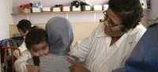
"Aunque mi padre me perdonara algún día por haber dado a luz estando soltera, yo seguiré siendo la vergüenza del barrio por haber manchado el honor de mi familia, así que no me hago ilusiones sobre volver a mi casa y que los míos acepten a mi hijo".
Quien habla es Amal, que se quedó embarazada con 23 años y su novio la abandonó al enterarse, pero no piensa delatarlo: "Primero, porque es casado; segundo, porque si hago público su nombre mis hermanos irán a matarlo, y bastantes problemas he dado ya a mi familia".
El primer reflejo de Amal, como el de todas las madres solteras, fue huir de su casa hasta llegar a Casablanca, la gran metrópolis marroquí donde una mujer con un pecado en el vientre puede encontrar el anonimato, primero, y más tarde una mano amiga.
Tras un paso por una institución de monjas que ayudan discretamente a las mujeres como ella, ahora llama a las puertas de Solidaridad Femenina (SF), organización pionera en la defensa de las madres solteras.
Dice Aicha Chenna, fundadora de SF, que cada día nacen en Marruecos 100 niños fuera del matrimonio, de los que 24 son abandonados, lo que se traduce en que un 11,4 % de nacimientos son hijos de solteras.
Las cosas han mejorado levemente para las madres solteras en este país: ya no tienen obligación de inscribir a su hijo con la "X" como apellido; desde 2004, con la reforma del Código de la Familia, pueden darle un apellido ficticio que oculte su consideración de bastardos.
Pero Chenna se queja de que la ley "está en manos de funcionarios, quienes con frecuencia complican mucho las cosas" a las madres solteras: por ejemplo, lo habitual es que se nieguen a aceptar test de ADN (muy caros y siempre costeados por la madre) para demostrar la paternidad y exijan en cambio "certificados de noviazgo" inexistentes.
Algunas tienen historias aún más terribles que Amal, como Nezha, de 24 años, peluquera y analfabeta, embarazada tras ser violada por tres desconocidos una tarde, al salir de su trabajo, y también huida de su casa por miedo a un hermano "agresivo y drogadicto", pero resuelta a criar sola a una hija que ya tiene 24 días de edad.
La opinión popular es implacable con las madres solteras (con frecuencia equiparadas con prostitutas) y muchas familias prefieren recurrir al aborto antes de que el vientre de una joven arroje una mancha sobre su reputación, se lamenta Chenna.
Una vez oyó decir a una madre soltera que odiaba a su hijo con este argumento: "No puedo darle amor, solo he recibido odio en mi vida".
Así que la principal preocupación de Solidaridad Femenina es dignificar a las madres solteras y reforzar su autoestima, enseñándoles durante tres años a leer si son analfabetas, además de un oficio (cocina, peluquería, pastelería y costura) mientras cuidan a sus hijos en una guardería. Al cabo de tres años, deben ser capaces de volar por su cuenta.
Hay ahora cuarenta mujeres con sus niños acogidos por la institución en tres centros de Casablanca. Cada mujer cuesta a Solidaridad Femenina 4.000 dirhams mensuales (unos 400 euros), lo que se traduce en gastos anuales de 5 millones de dirhams, de los que SF solo financia la mitad, siendo el resto procedente de donaciones.
Aicha Chenna recibió en el año 2000 amenazas, por teléfono y por escrito, de grupos islamistas que la acusaban de propagar el adulterio, pero no por ello se arredra: siendo nieta de un teólogo musulmán, le gusta repetir que "Dios crea como quiere, con quien quiere y cuando quiere", y lo apoya con versos del Corán.
"Aquí hay mucha hipocresía: (los islamistas) utilizan la religión como les parece, pero he descubierto que también entre ellos hay madres solteras y hombres que se dicen virtuosos y luego abandonan a la mujer", sostiene.
Sin embargo, el propio rey Mohamed VI se ha puesto en contacto con ella para pedirle que continúe con su tarea y donarle casi 2 millones de dirhams (200.000 euros) para su asociación, mientras que una fundación norteamericana la ha galardonado con el prestigioso Premio Opus, dotado con un millón de dólares.
La semilla de Solidaridad Femenina ha germinado y ahora hay más de quince asociaciones en Marruecos que dan ayuda a las madres solteras. La vida sigue siendo dura para ellas, la sociedad las sigue mirando con desdén, pero varias de las que pasaron por SF son ahora cocineras o hasta chóferes de camión.
Dice Chenna que cada vez encuentra más casos de familias que perdonan el "desliz" de una joven y así permiten a un niño tener un hogar sin el estigma del maldito.
2012-03-19T07:55:34Z
El Rey anima a Iberoamérica a avanzar juntos hacia el progreso en el aniversario de 'La Pepa'
El Rey anima a Iberoamérica a avanzar juntos hacia el progreso en el aniversario de 'La Pepa'
EFE
En un mensaje radiofónico dirigido a la comunidad iberoamericana.
Don Juan Carlos preside en Cádiz el homenaje a La Pepa.
El Rey ha enviado este lunes, cuando se cumplen doscientos años de la Constitución de Cádiz, su "saludo más afectuoso" a todos los ciudadanos de la Comunidad Iberoamericana de naciones, con un llamamiento a cohesionar las sociedades, acabar con las desigualdades y continuar avanzando en el camino del progreso.En un mensaje radiofónico dirigido a la comunidad iberoamericana con motivo del bicentenario de las Cortes de 1912, don Juan Carlos ha recordado que, hace 200 años, "representantes de los territorios entonces unidos a la Corona de España se dieron cita en Cádiz para proclamar su soberanía, su libertad y su derecho a escribir su propio futuro"."El espíritu de familia alimentado por siglos de Historia compartida y valores comunes no ha dejado de crecer entre nosotros", continúa el Rey en su mensaje. "En la actualidad -añade don Juan Carlos- formamos una comunidad pujante, compuesta por más de 20 naciones y 600 millones de personas que cuenta con lenguas de alcance universal y con una diversidad, un mestizaje y una riqueza cultural extraordinarios"."Nos hemos dotado de mecanismos de diálogo y cooperación para impulsar toda esa fortaleza con el fin de cohesionar nuestras sociedades, acabar con las desigualdades y continuar avanzando en el camino del progreso, aportando al mundo lo mejor de nosotros mismos", ha subrayado, antes de reiterar su "saludo más afectuoso y el de España entera a todos los hombres y mujeres de Iberoamérica".Don Juan Carlos y doña Sofía presiden en Cádiz el solemne homenaje a la Constitución de 1812 que reunirá en el Oratorio San Felipe Neri, el restaurado escenario donde se redactó y proclamó aquel histórico texto, a unos trescientos invitados, entre ellos los máximos representantes de los poderes ejecutivo, legislativo y judicial.Además del Rey, que descubrirá junto a la reina una placa conmemorativa en la fachada del Oratorio, en este acto central de las conmemoraciones por el bicentenario tomarán la palabra el presidente del Gobierno, Mariano Rajoy, y los del Congreso, Jesús Posada, y el Senado, Pío García Escudero.
EFE
- En un mensaje radiofónico dirigido a la comunidad iberoamericana.
- Don Juan Carlos preside en Cádiz el homenaje a La Pepa.
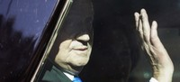
El Rey ha enviado este lunes, cuando se cumplen doscientos años de la Constitución de Cádiz, su "saludo más afectuoso" a todos los ciudadanos de la Comunidad Iberoamericana de naciones, con un llamamiento a cohesionar las sociedades, acabar con las desigualdades y continuar avanzando en el camino del progreso.
En un mensaje radiofónico dirigido a la comunidad iberoamericana con motivo del bicentenario de las Cortes de 1912, don Juan Carlos ha recordado que, hace 200 años, "representantes de los territorios entonces unidos a la Corona de España se dieron cita en Cádiz para proclamar su soberanía, su libertad y su derecho a escribir su propio futuro".
"El espíritu de familia alimentado por siglos de Historia compartida y valores comunes no ha dejado de crecer entre nosotros", continúa el Rey en su mensaje.
"En la actualidad -añade don Juan Carlos- formamos una comunidad pujante, compuesta por más de 20 naciones y 600 millones de personas que cuenta con lenguas de alcance universal y con una diversidad, un mestizaje y una riqueza cultural extraordinarios".
"Nos hemos dotado de mecanismos de diálogo y cooperación para impulsar toda esa fortaleza con el fin de cohesionar nuestras sociedades, acabar con las desigualdades y continuar avanzando en el camino del progreso, aportando al mundo lo mejor de nosotros mismos", ha subrayado, antes de reiterar su "saludo más afectuoso y el de España entera a todos los hombres y mujeres de Iberoamérica".
Don Juan Carlos y doña Sofía presiden en Cádiz el solemne homenaje a la Constitución de 1812 que reunirá en el Oratorio San Felipe Neri, el restaurado escenario donde se redactó y proclamó aquel histórico texto, a unos trescientos invitados, entre ellos los máximos representantes de los poderes ejecutivo, legislativo y judicial.
Además del Rey, que descubrirá junto a la reina una placa conmemorativa en la fachada del Oratorio, en este acto central de las conmemoraciones por el bicentenario tomarán la palabra el presidente del Gobierno, Mariano Rajoy, y los del Congreso, Jesús Posada, y el Senado, Pío García Escudero.
2012-03-19T01:09:52Z
El comercio mundial de armas creció un 24 % en los últimos cinco años
El comercio mundial de armas creció un 24 % en los últimos cinco años
EFE
Según un informe difundido este domingo por el Instituto Internacional de Estudios para la Paz de Estocolmo (SIPRI).
Los cinco mayores exportadores: EEUU, Rusia, Alemania, Francia y Reino Unido.
EE UU mantiene la hegemonía mundial en exportaciones, mientras que India lidera en importaciones.
El comercio mundial de armas convencionales aumentó un 24 por ciento en 2007-2011 con respecto al lustro anterior, según un informe difundido este domingo por el Instituto Internacional de Estudios para la Paz de Estocolmo (SIPRI).Estados Unidos mantiene su hegemonía mundial como principal exportador, mientras que la India fue el país que más armamento compró en ese quinquenio, seguida por otros cuatro países asiáticos.Los cinco mayores exportadores mundiales -EEUU, Rusia, Alemania, Francia y Reino Unido- acapararon el 75 por ciento de las ventas totales en 2007-2011.Las exportaciones de armamento de EEUU, que suponen el 30 por ciento mundial, subieron también un 24 por ciento en ese lustro con respecto al anterior, con Corea del Sur, Australia y Emiratos Árabes Unidos como sus mejores clientes.Importaciones asiáticasPor regiones, Asia y Oceanía recibieron el 45 por ciento de las exportaciones estadounidenses, seguidas por Oriente Medio (27%) y por Europa (18%).La aviación constituyó el 63% de las exportaciones en 2007-2011 de Estados Unidos, que protagonizó con Arabia Saudí la principal operación de ventas de armas de 2011 y de las últimas dos décadas: la compra por este país asiático de 84 cazas F-15SG y la reconstrucción de otros 70 ya existentes.Rusia, que vendió un 12 por ciento más y acapara casi una cuarta parte del total mundial, tuvo a India como su mejor cliente; mientras que Alemania, que desbancó a Francia del tercer puesto, vendió un 37 por ciento más, con Grecia como principal destinatario.India mantiene el liderato mundial en importaciones en el último lustro, con el 10 por ciento, por delante de Corea del Sur (6%), Pakistán (5%), China (5%) y Singapur (4%)."Los principales importadores asiáticos buscan desarrollar su propia industria armamentística y disminuir su dependencia en fuentes de suministro externas", señaló Pieter Wezeman, investigador del SIPRI.El caso más notorio es el de China, principal importador mundial en 2002-2006 y ahora cuarto, y que en el último lustro ha aumentado sus exportaciones un 95% hasta convertirse en el sexto principal vendedor de armas en el mundo, aunque debido sobre todo a varios contratos con Pakistán.El mercado de la 'Primavera árabe'El informe del SIPRI destaca además "aumentos significativos" en el comercio de armas en zonas como el este y el norte de África, el sudeste Asiático y el sur del Cáucaso, y que los principales exportadores continúan suministrando armas a países que se han visto afectados por la llamada Primavera Árabe.Así, EEUU es el principal suministrador de Túnez y Egipto, y Rusia, de Siria, que incrementó sus importaciones un 580 por ciento entre los dos últimos lustros."El comercio de armas con países afectados por la 'Primavera Árabe' ha provocado debate público y parlamentario en varios países suministradores. Sin embargo, el impacto de esos debates en las políticas de exportación de esos países ha sido limitado hasta ahora", afirmó Mark Bromley, otro experto del SIPRI.En el continente africano las importaciones subieron un 110 por ciento en el último lustro, especialmente en la zona norte, cuyos países acaparan ahora el 59% de las importaciones, por el 33% anterior.Argelia, con el 43%, Sudáfrica (17%) y Marruecos (16%) encabezan la lista, con aumentos importantes, sobre todo en el caso de este último, cuyas compras de armas subieron un 443%.Continente AmericanoEl continente americano experimentó un aumento del 61 por ciento en sus importaciones de armas en 2007-2011, con EEUU como principal importador y octavo del mundo.En América del Sur, Chile y Venezuela acapararon el 61 por ciento de las importaciones en la región, y en el caso de este último, aumentaron un 555 por ciento en el último lustro, pasando del número 46 al número 15 en la lista de importadores mundiales.El informe destaca que Brasil ha firmado varios acuerdos de compra de armas con Francia e Italia "que resultarán en un aumento dramático en el volumen de sus importaciones en los próximos años".
EFE
- Según un informe difundido este domingo por el Instituto Internacional de Estudios para la Paz de Estocolmo (SIPRI).
- Los cinco mayores exportadores: EEUU, Rusia, Alemania, Francia y Reino Unido.
- EE UU mantiene la hegemonía mundial en exportaciones, mientras que India lidera en importaciones.
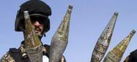
El comercio mundial de armas convencionales aumentó un 24 por ciento en 2007-2011 con respecto al lustro anterior, según un informe difundido este domingo por el Instituto Internacional de Estudios para la Paz de Estocolmo (SIPRI).
Estados Unidos mantiene su hegemonía mundial como principal exportador, mientras que la India fue el país que más armamento compró en ese quinquenio, seguida por otros cuatro países asiáticos.
Los cinco mayores exportadores mundiales -EEUU, Rusia, Alemania, Francia y Reino Unido- acapararon el 75 por ciento de las ventas totales en 2007-2011.
Las exportaciones de armamento de EEUU, que suponen el 30 por ciento mundial, subieron también un 24 por ciento en ese lustro con respecto al anterior, con Corea del Sur, Australia y Emiratos Árabes Unidos como sus mejores clientes.
Importaciones asiáticas
Por regiones, Asia y Oceanía recibieron el 45 por ciento de las exportaciones estadounidenses, seguidas por Oriente Medio (27%) y por Europa (18%).
La aviación constituyó el 63% de las exportaciones en 2007-2011 de Estados Unidos, que protagonizó con Arabia Saudí la principal operación de ventas de armas de 2011 y de las últimas dos décadas: la compra por este país asiático de 84 cazas F-15SG y la reconstrucción de otros 70 ya existentes.
Rusia, que vendió un 12 por ciento más y acapara casi una cuarta parte del total mundial, tuvo a India como su mejor cliente; mientras que Alemania, que desbancó a Francia del tercer puesto, vendió un 37 por ciento más, con Grecia como principal destinatario.
India mantiene el liderato mundial en importaciones en el último lustro, con el 10 por ciento, por delante de Corea del Sur (6%), Pakistán (5%), China (5%) y Singapur (4%).
"Los principales importadores asiáticos buscan desarrollar su propia industria armamentística y disminuir su dependencia en fuentes de suministro externas", señaló Pieter Wezeman, investigador del SIPRI.
El caso más notorio es el de China, principal importador mundial en 2002-2006 y ahora cuarto, y que en el último lustro ha aumentado sus exportaciones un 95% hasta convertirse en el sexto principal vendedor de armas en el mundo, aunque debido sobre todo a varios contratos con Pakistán.
El mercado de la 'Primavera árabe'
El informe del SIPRI destaca además "aumentos significativos" en el comercio de armas en zonas como el este y el norte de África, el sudeste Asiático y el sur del Cáucaso, y que los principales exportadores continúan suministrando armas a países que se han visto afectados por la llamada Primavera Árabe.
Así, EEUU es el principal suministrador de Túnez y Egipto, y Rusia, de Siria, que incrementó sus importaciones un 580 por ciento entre los dos últimos lustros.
"El comercio de armas con países afectados por la 'Primavera Árabe' ha provocado debate público y parlamentario en varios países suministradores. Sin embargo, el impacto de esos debates en las políticas de exportación de esos países ha sido limitado hasta ahora", afirmó Mark Bromley, otro experto del SIPRI.
En el continente africano las importaciones subieron un 110 por ciento en el último lustro, especialmente en la zona norte, cuyos países acaparan ahora el 59% de las importaciones, por el 33% anterior.
Argelia, con el 43%, Sudáfrica (17%) y Marruecos (16%) encabezan la lista, con aumentos importantes, sobre todo en el caso de este último, cuyas compras de armas subieron un 443%.
Continente Americano
El continente americano experimentó un aumento del 61 por ciento en sus importaciones de armas en 2007-2011, con EEUU como principal importador y octavo del mundo.
En América del Sur, Chile y Venezuela acapararon el 61 por ciento de las importaciones en la región, y en el caso de este último, aumentaron un 555 por ciento en el último lustro, pasando del número 46 al número 15 en la lista de importadores mundiales.
El informe destaca que Brasil ha firmado varios acuerdos de compra de armas con Francia e Italia "que resultarán en un aumento dramático en el volumen de sus importaciones en los próximos años".
2012-03-18T23:48:34Z
Abrumadora victoria de Romney en las primarias republicanas de Puerto Rico
Abrumadora victoria de Romney en las primarias republicanas de Puerto Rico
EFE
Se ha hecho con el 82,99 % de los votos, seguido de Santorum, con el 8,38 %.
Puerto Rico, estado libre asociado de Estados Unidos, aporta 23 delegados
Dado que los puertorriqueños no pueden votar en las elecciones generales, esta fue una de las escasas oportunidades para influir en la política de EEUU.
El exgobernador de Massachusetts Mitt Romney ganó este domingo las primarias republicanas realizadas en Puerto Rico, dentro de la larga contienda por la candidatura presidencial de este partido en Estados Unidos.Con un escrutinio del 44,08 % en el centro de seguimiento electoral, Romney tenía el 83,42 % de los votos seguido del exsenador por Pensilvania Rick Santorum, con el 7,74 %, del expresidente de la Cámara de Representantes Newt Gingrich, con el 2,07 %, y del legislador tejano Ron Paul, con el 1,11 %. "Ann (su esposa) y yo estamos profundamente agradecidos a la buena gente de Puerto Rico por su apoyo. Con una población mayor que la de 22 estados, esta isla contribuye de muchas maneras a la vitalidad de nuestro país", dijo Romney tras difundirse los resultados.El hecho de contar con más del 50 % de los votos otorga a Romney todos los delegados en juego en la isla caribeña y le permite avanzar en esta larga carrera por la nominación a la candidatura presidencial para enfrentarse en noviembre a Barack Obama.Y eso que Santorum ha trabajado más que Romney por los intereses de los puertorriqueños, ya que luchó por igualar sus derechos de cobertura sanitaria con los del resto de estadounidenses."Mucha gente me llamaba el senador puertorriqueño. Se solían reír de mí y me preguntaban por qué estaba defendiendo a Puerto Rico", explicó esta semana Santorum durante su campaña en la isla.¿El estado número 51?Sin embargo, su defensa de que el inglés sea la principal lengua de Puerto Rico si finalmente se convierte en el estado número 51 de EE UU parece haber hecho mella entre los votantes.Con el inglés y el español como lenguas oficiales, Puerto Rico es territorio estadounidense desde 1898. Tiene gobierno propio, pero depende de EE UU en materias como defensa, política monetaria, inmigración y aduanas.Los puertorriqueños cuentan con un representante en el Congreso, aunque sin voto, no pagan impuestos federales y no pueden votar en las elecciones generales.Sobre el estatus, Romney se ha limitado a repetir durante su campaña que está dispuesto a impulsar la anexión en caso de llegar a ser presidente de EE UU."Si los puertorriqueños así lo escogen yo estaría feliz de trabajar por ello en Washington", aseguró Romney en referencia a la consulta no vinculante que se celebrará el 6 de noviembre.Los puertorriqueños le han apoyado incluso pese a su oposición al nombramiento de la jueza de ascendencia puertorriqueña Sonia Sotomayor en el Tribunal Supremo de EE.UU..Los analistas coinciden en que Romney se ha visto favorecido por el apoyo del gobernador de Puerto Rico, Luis Fortuño, cuyo partido aboga también por la anexión."Romney ha mostrado respeto por nuestra herencia y nuestra historia, lo entiende mejor", dijo esta semana Fortuño, quien también destacó el enfoque económico de la campaña del precandidato en una isla que lleva cinco años en recesión.Dado que los puertorriqueños no pueden votar en las elecciones generales, la de este domingo fue una de las escasas oportunidades que tienen de influir en la política nacional de EE UU.El voto de Puerto RicoEl voto de Puerto Rico es este año más importantes que ocasiones anteriores por varios motivos, sobretodo porque la carrera por la candidatura presidencial aún no tiene un claro vencedor. Si bien Romney se perfila como favorito, recientemente Santorum ha logrado un empuje que le ha permitido estrechar distancias.Aunque ni Paul ni Gingrich se han desplazado a Puerto Rico para hacer campaña, este último sí envió a su hija Kathy Lubbers, al tiempo que en las primarias de Florida, en febrero, se pronunció claramente a favor de apoyar a los puertorriqueños si éstos respaldaban mayoritariamente la anexión.El voto de Puerto Rico también ha ganado relevancia porque puede influir en la creciente población puertorriqueña que reside en el territorio continental, que sí vota en las generales y que cada vez tiene un mayor peso electoral.Aunque la mayoría de la población latina de EE UU es de origen mexicano, los puertorriqueños son los segundos más representados, mientras que son especialmente numerosos en estados claves como Florida.Con esta clara victoria , Romney tiene el camino algo más allanado hacia la próxima cita electoral, que tendrá lugar el martes en Illinois.'Superdelegados'Puerto Rico, que es un estado libre asociado de Estados Unidos, aporta 23 delegados, pero tres de ellos son superdelegados que ya están designados de antemano y pueden votar a quienes ellos decidan.Se trata del gobernador de Puerto Rico, Luis Fortuño, y la delegada nacional del Partido Republicano en la isla, Zoraida Fonalledas, que apoyan a Romney; así como del presidente local de esta agrupación política, Carlos Méndez, que tiene previsto dar su voto a Newt Gingrich.Según el recuento oficial del Partido Republicano, que no incluye datos de este domingo, de los 1.040 delegados comprometidos hasta el momento, Romney cuenta con el apoyo de 416, Santorum con 170, Gingrich con 133 y Ron Paul con 26.Se necesita el apoyo de al menos 1.144 delegados para tener garantizada la designación de candidato. Quien salga allí elegido será el contrincante de Barack Obama, que busca la reelección en los comicios generales del próximo noviembre.
EFE
- Se ha hecho con el 82,99 % de los votos, seguido de Santorum, con el 8,38 %.
- Puerto Rico, estado libre asociado de Estados Unidos, aporta 23 delegados
- Dado que los puertorriqueños no pueden votar en las elecciones generales, esta fue una de las escasas oportunidades para influir en la política de EEUU.
El exgobernador de Massachusetts Mitt Romney ganó este domingo las primarias republicanas realizadas en Puerto Rico, dentro de la larga contienda por la candidatura presidencial de este partido en Estados Unidos.
Con un escrutinio del 44,08 % en el centro de seguimiento electoral, Romney tenía el 83,42 % de los votos seguido del exsenador por Pensilvania Rick Santorum, con el 7,74 %, del expresidente de la Cámara de Representantes Newt Gingrich, con el 2,07 %, y del legislador tejano Ron Paul, con el 1,11 %.
"Ann (su esposa) y yo estamos profundamente agradecidos a la buena gente de Puerto Rico por su apoyo. Con una población mayor que la de 22 estados, esta isla contribuye de muchas maneras a la vitalidad de nuestro país", dijo Romney tras difundirse los resultados.
El hecho de contar con más del 50 % de los votos otorga a Romney todos los delegados en juego en la isla caribeña y le permite avanzar en esta larga carrera por la nominación a la candidatura presidencial para enfrentarse en noviembre a Barack Obama.
Y eso que Santorum ha trabajado más que Romney por los intereses de los puertorriqueños, ya que luchó por igualar sus derechos de cobertura sanitaria con los del resto de estadounidenses.
"Mucha gente me llamaba el senador puertorriqueño. Se solían reír de mí y me preguntaban por qué estaba defendiendo a Puerto Rico", explicó esta semana Santorum durante su campaña en la isla.
¿El estado número 51?
Sin embargo, su defensa de que el inglés sea la principal lengua de Puerto Rico si finalmente se convierte en el estado número 51 de EE UU parece haber hecho mella entre los votantes.
Con el inglés y el español como lenguas oficiales, Puerto Rico es territorio estadounidense desde 1898. Tiene gobierno propio, pero depende de EE UU en materias como defensa, política monetaria, inmigración y aduanas.
Los puertorriqueños cuentan con un representante en el Congreso, aunque sin voto, no pagan impuestos federales y no pueden votar en las elecciones generales.
Sobre el estatus, Romney se ha limitado a repetir durante su campaña que está dispuesto a impulsar la anexión en caso de llegar a ser presidente de EE UU.
"Si los puertorriqueños así lo escogen yo estaría feliz de trabajar por ello en Washington", aseguró Romney en referencia a la consulta no vinculante que se celebrará el 6 de noviembre.
Los puertorriqueños le han apoyado incluso pese a su oposición al nombramiento de la jueza de ascendencia puertorriqueña Sonia Sotomayor en el Tribunal Supremo de EE.UU..
Los analistas coinciden en que Romney se ha visto favorecido por el apoyo del gobernador de Puerto Rico, Luis Fortuño, cuyo partido aboga también por la anexión.
"Romney ha mostrado respeto por nuestra herencia y nuestra historia, lo entiende mejor", dijo esta semana Fortuño, quien también destacó el enfoque económico de la campaña del precandidato en una isla que lleva cinco años en recesión.
Dado que los puertorriqueños no pueden votar en las elecciones generales, la de este domingo fue una de las escasas oportunidades que tienen de influir en la política nacional de EE UU.
El voto de Puerto Rico
El voto de Puerto Rico es este año más importantes que ocasiones anteriores por varios motivos, sobretodo porque la carrera por la candidatura presidencial aún no tiene un claro vencedor. Si bien Romney se perfila como favorito, recientemente Santorum ha logrado un empuje que le ha permitido estrechar distancias.
Aunque ni Paul ni Gingrich se han desplazado a Puerto Rico para hacer campaña, este último sí envió a su hija Kathy Lubbers, al tiempo que en las primarias de Florida, en febrero, se pronunció claramente a favor de apoyar a los puertorriqueños si éstos respaldaban mayoritariamente la anexión.
El voto de Puerto Rico también ha ganado relevancia porque puede influir en la creciente población puertorriqueña que reside en el territorio continental, que sí vota en las generales y que cada vez tiene un mayor peso electoral.
Aunque la mayoría de la población latina de EE UU es de origen mexicano, los puertorriqueños son los segundos más representados, mientras que son especialmente numerosos en estados claves como Florida.
Con esta clara victoria , Romney tiene el camino algo más allanado hacia la próxima cita electoral, que tendrá lugar el martes en Illinois.
'Superdelegados'
Puerto Rico, que es un estado libre asociado de Estados Unidos, aporta 23 delegados, pero tres de ellos son superdelegados que ya están designados de antemano y pueden votar a quienes ellos decidan.
Se trata del gobernador de Puerto Rico, Luis Fortuño, y la delegada nacional del Partido Republicano en la isla, Zoraida Fonalledas, que apoyan a Romney; así como del presidente local de esta agrupación política, Carlos Méndez, que tiene previsto dar su voto a Newt Gingrich.
Según el recuento oficial del Partido Republicano, que no incluye datos de este domingo, de los 1.040 delegados comprometidos hasta el momento, Romney cuenta con el apoyo de 416, Santorum con 170, Gingrich con 133 y Ron Paul con 26.
Se necesita el apoyo de al menos 1.144 delegados para tener garantizada la designación de candidato. Quien salga allí elegido será el contrincante de Barack Obama, que busca la reelección en los comicios generales del próximo noviembre.
2012-03-18T20:58:16Z
McCain critica que su partido hable de anticonceptivos y no de economía
McCain critica que su partido hable de anticonceptivos y no de economía
EFE
El senador y excandidato a la presidencia de EE UU cree que los republicanos deben respetar el derecho de la mujer a controlar la natalidad.
Cree que esa "guerra" contra las féminas puedes perjudicarlos en las urnas.
Apuesta por que su partido se centre en "los empleos y la economía".
El senador republicano por Arizona (EE UU), John McCain, aconsejó este domingo a los sectores más conservadores del partido republicano que se concentren en la recuperación económica como clave electoral y respeten el derecho de la mujer a controlar la natalidad.La reciente batalla mediática de algunos líderes conservadores en contra de la cobertura médica de los anticonceptivos y del aborto ha dado pie a acusaciones de que el Partido Republicano está "en guerra" contra las mujeres y el temor es que eso pueda perjudicarlos en las urnas el próximo 6 de noviembre."Tenemos que corregir eso; creo que existe esa percepción allá afuera por la forma en que ha salido todo este asunto de los anticonceptivos. En mi opinión, creo que debemos dejar ese asunto", dijo McCain en declaraciones al programa Meet the Press de la cadena NBC.Los republicanos "debemos respetar el derecho de las mujeres a tomar decisiones en sus vidas, dejar claro eso, y regresar a lo que al pueblo estadounidense verdaderamente le importa, los empleos y la economía", enfatizó McCain, que fue candidato presidencial republicano en 2008, cuando ganó Barack Obama, ahora candidato a la reelección por el Partido Demócrata."Los empleos y la economía y, obviamente, otra cosa de la que estaremos hablando pronto, que es esta larga y difícil lucha en Afganistán", agregó.Los demócratas, en general, han aprovechado la controversia sobre la cobertura médica de los anticonceptivos dentro de la reforma sanitaria para pintar a los republicanos como enemigos de los derechos de la mujer.Los comentarios de McCain reflejan la ansiedad de los republicanos dentro y fuera del Congreso de que ese enfoque de los conservadores en temas sociales (incluyendo al aspirante presidencial Rick Santorum, un católico estricto) pueda ahuyentar a las mujeres en los comicios del próximo 6 de noviembre.La hija de McCain, Meghan, dijo en una reveladora entrevista divulgada el viernes por la revista Playboy que le gusta la ropa de pronunciado escote para sentirse "sexy" y que, si McCain hubiese ganado en 2008, la Casa Blanca hubiese tenido "la 'primera hija' más loca" jamás vista en la mansión presidencial.En la entrevista, Meghan, que se ha labrado fama por su vestir atrevido y sus fiestas, negó ser lesbiana y, además, enfatizó: "No lo puedo resistir, amo el sexo y amo los hombres".
EFE
- El senador y excandidato a la presidencia de EE UU cree que los republicanos deben respetar el derecho de la mujer a controlar la natalidad.
- Cree que esa "guerra" contra las féminas puedes perjudicarlos en las urnas.
- Apuesta por que su partido se centre en "los empleos y la economía".
El senador republicano por Arizona (EE UU), John McCain, aconsejó este domingo a los sectores más conservadores del partido republicano que se concentren en la recuperación económica como clave electoral y respeten el derecho de la mujer a controlar la natalidad.
La reciente batalla mediática de algunos líderes conservadores en contra de la cobertura médica de los anticonceptivos y del aborto ha dado pie a acusaciones de que el Partido Republicano está "en guerra" contra las mujeres y el temor es que eso pueda perjudicarlos en las urnas el próximo 6 de noviembre.
"Tenemos que corregir eso; creo que existe esa percepción allá afuera por la forma en que ha salido todo este asunto de los anticonceptivos. En mi opinión, creo que debemos dejar ese asunto", dijo McCain en declaraciones al programa Meet the Press de la cadena NBC.
Los republicanos "debemos respetar el derecho de las mujeres a tomar decisiones en sus vidas, dejar claro eso, y regresar a lo que al pueblo estadounidense verdaderamente le importa, los empleos y la economía", enfatizó McCain, que fue candidato presidencial republicano en 2008, cuando ganó Barack Obama, ahora candidato a la reelección por el Partido Demócrata.
"Los empleos y la economía y, obviamente, otra cosa de la que estaremos hablando pronto, que es esta larga y difícil lucha en Afganistán", agregó.
Los demócratas, en general, han aprovechado la controversia sobre la cobertura médica de los anticonceptivos dentro de la reforma sanitaria para pintar a los republicanos como enemigos de los derechos de la mujer.
Los comentarios de McCain reflejan la ansiedad de los republicanos dentro y fuera del Congreso de que ese enfoque de los conservadores en temas sociales (incluyendo al aspirante presidencial Rick Santorum, un católico estricto) pueda ahuyentar a las mujeres en los comicios del próximo 6 de noviembre.
La hija de McCain, Meghan, dijo en una reveladora entrevista divulgada el viernes por la revista Playboy que le gusta la ropa de pronunciado escote para sentirse "sexy" y que, si McCain hubiese ganado en 2008, la Casa Blanca hubiese tenido "la 'primera hija' más loca" jamás vista en la mansión presidencial.
En la entrevista, Meghan, que se ha labrado fama por su vestir atrevido y sus fiestas, negó ser lesbiana y, además, enfatizó: "No lo puedo resistir, amo el sexo y amo los hombres".
2012-03-18T19:09:24Z
El velatorio por la muerte del papa copto causa tres muertos y decenas de heridos en Egipto
El velatorio por la muerte del papa copto causa tres muertos y decenas de heridos en Egipto
EFE
Las víctimas han muerto asfixiadas por la marea humana.
Decenas de miles de personas han acudido a despedido al líder religioso en Egipto.
El papa de la Iglesia ortodoxa copta Shenuda III murió el día anterior de una larga enfermedad.
Al menos tres personas han muerto y otras 40 han resultado heridas en el velatorio que ha congregado este domingo a decenas de miles de personas en la catedral cairota de Abasiya para despedir al papa copto Shenuda III, fallecido el día anterior sábado.Las víctimas han fallecido asfixiadas por la enorme aglomeración de fieles registrada en torno a la catedral de El Cairo, según han informado fuentes de seguridad locales, donde se encontraba el cuerpo del religioso sentado en la llamada Silla de San Marcos que difundió el cristianismo en Egipto.Fuera del velatorio cundía la tensión ante la imposibilidad de los fieles de entrar y salir por la aglomeración, y algunas familias desistieron por miedo a posibles estampidas. El fervor de los cristianos egipcios y el testimonial despliegue de las fuerzas de Seguridad han formado una marea humana, de la que continuamente han ido saliendo en volandas personas que se han desmayado o que presentan síntomas de asfixia.Padres con niños que lloraban aupados a sus hombros, mujeres embarazadas con caras de sofoco, familias enteras y grupos de jóvenes luchaban para abrirse paso entre empujones, mientras que algunos trataban de saltar los muros del recinto en una tentativa desesperada.Escasa presencia policialSolo grupos de voluntarios han intentado organizar la riada de fieles. Apenas había presencia policial en la zona y los pocos agentes que había desplegados fuera del complejo catedralicio contemplaban la escena con mirada impasible, mientras que dos carros de combate militares frente al templo tampoco hacían nada para controlar a la masa de gente.Acudieron a despedir al papa y dar el pésame el jefe de la Junta Militar egipcia, el mariscal Husein Tantaui, y otros altos cargos del Consejo Supremo de las Fuerzas Armadas. En el interior del complejo, el cristiano Ragy Refaat esperaba paciente junto a su madre para salir. "La muerte del papa Shenuda es un evento muy grande y estamos aquí para recibir su bendición", ha afirmdo. Para Refaat, Shenuda III "era el papa de Egipto y de todos los países árabes. Ha protegido a Egipto de la discordia, ha fortalecido la unidad nacional y ha construido más de 160 iglesias en el extranjero". En la catedral también se encontraban desde primera hora de la mañana los estudiantes Bulos y Mido, ambos de 20 años de edad. "Nos enteramos por televisión, aunque no nos sorprendió la noticia porque era muy mayor y llevaba enfermo desde hacía mucho tiempo", ha declarado Bulos. El joven consideró "normal" la ausencia de las fuerzas de seguridad porque "la policía no quiere problemas después de lo de Maspero", en referencia a los choques del 9 octubre pasado entre manifestantes coptos y militares frente a la sede de la radiotelevisión egipcia, que causaron 31 muertos.
EFE
- Las víctimas han muerto asfixiadas por la marea humana.
- Decenas de miles de personas han acudido a despedido al líder religioso en Egipto.
- El papa de la Iglesia ortodoxa copta Shenuda III murió el día anterior de una larga enfermedad.
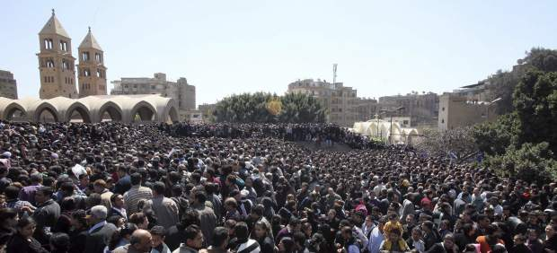
Al menos tres personas han muerto y otras 40 han resultado heridas en el velatorio que ha congregado este domingo a decenas de miles de personas en la catedral cairota de Abasiya para despedir al papa copto Shenuda III, fallecido el día anterior sábado.
Las víctimas han fallecido asfixiadas por la enorme aglomeración de fieles registrada en torno a la catedral de El Cairo, según han informado fuentes de seguridad locales, donde se encontraba el cuerpo del religioso sentado en la llamada Silla de San Marcos que difundió el cristianismo en Egipto.
Fuera del velatorio cundía la tensión ante la imposibilidad de los fieles de entrar y salir por la aglomeración, y algunas familias desistieron por miedo a posibles estampidas. El fervor de los cristianos egipcios y el testimonial despliegue de las fuerzas de Seguridad han formado una marea humana, de la que continuamente han ido saliendo en volandas personas que se han desmayado o que presentan síntomas de asfixia.
Padres con niños que lloraban aupados a sus hombros, mujeres embarazadas con caras de sofoco, familias enteras y grupos de jóvenes luchaban para abrirse paso entre empujones, mientras que algunos trataban de saltar los muros del recinto en una tentativa desesperada.
Escasa presencia policial
Solo grupos de voluntarios han intentado organizar la riada de fieles. Apenas había presencia policial en la zona y los pocos agentes que había desplegados fuera del complejo catedralicio contemplaban la escena con mirada impasible, mientras que dos carros de combate militares frente al templo tampoco hacían nada para controlar a la masa de gente.
Acudieron a despedir al papa y dar el pésame el jefe de la Junta Militar egipcia, el mariscal Husein Tantaui, y otros altos cargos del Consejo Supremo de las Fuerzas Armadas. En el interior del complejo, el cristiano Ragy Refaat esperaba paciente junto a su madre para salir. "La muerte del papa Shenuda es un evento muy grande y estamos aquí para recibir su bendición", ha afirmdo.
Para Refaat, Shenuda III "era el papa de Egipto y de todos los países árabes. Ha protegido a Egipto de la discordia, ha fortalecido la unidad nacional y ha construido más de 160 iglesias en el extranjero". En la catedral también se encontraban desde primera hora de la mañana los estudiantes Bulos y Mido, ambos de 20 años de edad. "Nos enteramos por televisión, aunque no nos sorprendió la noticia porque era muy mayor y llevaba enfermo desde hacía mucho tiempo", ha declarado Bulos.
El joven consideró "normal" la ausencia de las fuerzas de seguridad porque "la policía no quiere problemas después de lo de Maspero", en referencia a los choques del 9 octubre pasado entre manifestantes coptos y militares frente a la sede de la radiotelevisión egipcia, que causaron 31 muertos.
2012-03-19T20:08:48Z
Cinco excursionistas fallecen sepultados por una avalancha de nieve en el norte de Noruega
Cinco excursionistas fallecen sepultados por una avalancha de nieve en el norte de Noruega
EFE
Cuatro suizos y un francés, han muerto este lunes tras ser sepultados por una avalancha de nieve en Kåfjorden, en Troms, en el norte de Noruega.
Otro excursionista suizo ha sido rescatado con vida y trasladado al hospital.
Se vieron sorprendidos a una altura de unos 1.100 metros en el monte Sormegaisa, una zona muy popular entre los turistas aficionados al esquí.
Cinco excursionistas, cuatro suizos y un francés, han muerto este lunes tras ser sepultados por una avalancha de nieve en Kåfjorden, en Troms, en el norte de Noruega, informó este lunes la Policía de ese país escandinavo.Otro excursionista suizo ha sido rescatado con vida y trasladado al Hospital Universitario del Norte de Noruega, en Tromsø. La dirección del hospital informó de que sufre heridas de carácter moderado y se encuentra estable. "Podemos confirmar que hemos desenterrado a cinco personas de la masa de nieve y que los cinco están muertos. La última persona fue encontrada a seis metros de profundidad en la nieve", declaró a la televisión pública NRK Gaute Austeggen, jefe del equipo policial enviado a la zona del accidente.La acción de rescate se dio por finalizada a las 18.30 GMT (19.30 hora peninsular), informó la Policía de Troms, que pudo rastrear a los excursionistas por las señales de sus equipos de radio. Las autoridades noruegas trabajaban ahora con la identificación de los cadáveres para poder avisar a las familias de las víctimas.En el rescate participaron agentes con perros, equipos de salvamento de la Cruz Roja y helicópteros-ambulancia. Los excursionistas se vieron sorprendidos a una altura de unos 1.100 metros en el monte Sormegaisa, una zona muy popular entre los turistas aficionados al esquí.
EFE
- Cuatro suizos y un francés, han muerto este lunes tras ser sepultados por una avalancha de nieve en Kåfjorden, en Troms, en el norte de Noruega.
- Otro excursionista suizo ha sido rescatado con vida y trasladado al hospital.
- Se vieron sorprendidos a una altura de unos 1.100 metros en el monte Sormegaisa, una zona muy popular entre los turistas aficionados al esquí.
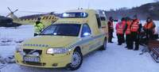
Cinco excursionistas, cuatro suizos y un francés, han muerto este lunes tras ser sepultados por una avalancha de nieve en Kåfjorden, en Troms, en el norte de Noruega, informó este lunes la Policía de ese país escandinavo.
Otro excursionista suizo ha sido rescatado con vida y trasladado al Hospital Universitario del Norte de Noruega, en Tromsø. La dirección del hospital informó de que sufre heridas de carácter moderado y se encuentra estable.
"Podemos confirmar que hemos desenterrado a cinco personas de la masa de nieve y que los cinco están muertos. La última persona fue encontrada a seis metros de profundidad en la nieve", declaró a la televisión pública NRK Gaute Austeggen, jefe del equipo policial enviado a la zona del accidente.
La acción de rescate se dio por finalizada a las 18.30 GMT (19.30 hora peninsular), informó la Policía de Troms, que pudo rastrear a los excursionistas por las señales de sus equipos de radio. Las autoridades noruegas trabajaban ahora con la identificación de los cadáveres para poder avisar a las familias de las víctimas.
En el rescate participaron agentes con perros, equipos de salvamento de la Cruz Roja y helicópteros-ambulancia. Los excursionistas se vieron sorprendidos a una altura de unos 1.100 metros en el monte Sormegaisa, una zona muy popular entre los turistas aficionados al esquí.
2012-03-19T19:17:04Z
El ministro griego de Economía, Evangelos Venizelos, dimite para liderar el camino electoral
El ministro griego de Economía, Evangelos Venizelos, dimite para liderar el camino electoral
AGENCIAS
Su sustituto, que se sabrá el martes, podrías ser Tassos Yannitsis.
Yannitsis es el actual ministro de Interior y era muy cercano a Venizelos.
Venizelos dimite para centrarse en la campaña electoral por el Pasok.
El ministro de Finanzas de Grecia, Evangelos Venizelos, dimitió este lunes de su cargo para centrarse en la campaña para las elecciones previstas para finales de abril o principios de mayo como nuevo líder del Movimiento Socialista Panhelénico (Pasok). El dirigente socialista recibió hoy oficialmente la batuta del partido de manos de su predecesor y hasta ahora adversario político, el exprimer ministro Yorgos Papandréu. Durante la mañana mantuvo reuniones con el presidente de la República, Karolos Papulias, y con el primer ministro, Lukás Papadimos. Posteriormente, Venizelos participó en su último consejo de ministros como titular de Finanzas, donde se oficializó su dimisión. "Hemos mantenido una valiosa colaboración en la puesta en práctica de las políticas y económicas y hemos tenido una cooperación excelente", le felicitó Papadimos durante el consejo. También dijo que, gracias a esta colaboración, "la economía griega avanza hacia terreno más sólido y entra en una nueva era de buenas perspectivas". Venizelos se proclamó este domingo líder del Pasok con el apoyo del 97 por ciento de los 236.000 militantes y simpatizantes socialistas que participaron en unas primarias, en las que fue el único candidato, una participación baja en comparación con las 500.000 personas que votaron en las últimas elecciones internas del partido. Está previsto que mañana se anuncie el nombre del sustituto de Venizelos al frente del ministerio de Finanzas. Los medios griegos barajan a varios candidatos, aunque el nombre que más suena es el de Tassos Yannitsis, ministro del Interior y hombre de confianza de Venizelos. Otros posibles candidatos son el actual viceministro de Finanzas, Filippos Sajinidis, y el propio Papadimos, pues algunos medios especulan con que el primer ministro podría asumir él mismo la cartera.
AGENCIAS
- Su sustituto, que se sabrá el martes, podrías ser Tassos Yannitsis.
-
Yannitsis es el actual ministro de Interior y era muy cercano a Venizelos.
- Venizelos dimite para centrarse en la campaña electoral por el Pasok.
El ministro de Finanzas de Grecia, Evangelos Venizelos, dimitió este lunes de su cargo para centrarse en la campaña para las elecciones previstas para finales de abril o principios de mayo como nuevo líder del Movimiento Socialista Panhelénico (Pasok). El dirigente socialista recibió hoy oficialmente la batuta del partido de manos de su predecesor y hasta ahora adversario político, el exprimer ministro Yorgos Papandréu.
Durante la mañana mantuvo reuniones con el presidente de la República, Karolos Papulias, y con el primer ministro, Lukás Papadimos. Posteriormente, Venizelos participó en su último consejo de ministros como titular de Finanzas, donde se oficializó su dimisión.
"Hemos mantenido una valiosa colaboración en la puesta en práctica de las políticas y económicas y hemos tenido una cooperación excelente", le felicitó Papadimos durante el consejo. También dijo que, gracias a esta colaboración, "la economía griega avanza hacia terreno más sólido y entra en una nueva era de buenas perspectivas".
Venizelos se proclamó este domingo líder del Pasok con el apoyo del 97 por ciento de los 236.000 militantes y simpatizantes socialistas que participaron en unas primarias, en las que fue el único candidato, una participación baja en comparación con las 500.000 personas que votaron en las últimas elecciones internas del partido.
Está previsto que mañana se anuncie el nombre del sustituto de Venizelos al frente del ministerio de Finanzas. Los medios griegos barajan a varios candidatos, aunque el nombre que más suena es el de Tassos Yannitsis, ministro del Interior y hombre de confianza de Venizelos. Otros posibles candidatos son el actual viceministro de Finanzas, Filippos Sajinidis, y el propio Papadimos, pues algunos medios especulan con que el primer ministro podría asumir él mismo la cartera.
2012-03-19T18:46:12Z
Al menos 30 muertos en Siria a pesar de la llegada de observadores de la ONU al país
Al menos 30 muertos en Siria a pesar de la llegada de observadores de la ONU al país
EFE
"Ha habido disparos de forma ininterrumpida durante toda la noche y hasta el amanecer", dice un residente de Damasco testigo de los enfrentamientos.
La misión de la ONU preparará una nueva visita de Annan y evaluará, bajo supervisión de las autoridaes locales, las necesidades humanitarias en el país.
El fin de semana se produjeron varios atentados: en Alepo, una cadena de explosiones en Damasco y en otras ciudades sirias.
A FONDO: De médico tranquilo a represor implacable: ¿Quién es Al Asad?
Al menos 30 personas murieron este lunes en Siria, la mayoría en zonas del sur y el este del país, en nuevos ataques de las tropas gubernamentales que coinciden con la llegada a Damasco de una delegación de observadores de la ONU.El grupo opositor Comités de Coordinación Local (CCL) informó en un comunicado de la muerte de nueve personas en Deir el Zur (este), seis en Deraa (sur) y tres en Hama (centro), Alepo (norte), Ibleb (noroeste) y la periferia de Damasco, respectivamente, así como de otras dos en Qamishli (noreste) y una en Homs (centro). Ocho de las víctimas mortales de Deir el Zur se registraron en la zona de Gasan Abud, bombardeada por las tropas del régimen, que también irrumpieron y atacaron otras localidades de la provincia, agregó la fuente. El CCL aseguró, asimismo, que once soldados desertaron en Gasan Abud poco antes de los ataques, e indicó que la región fue escenario de enfrentamientos entre las fuerzas gubernamentales y el rebelde Ejército Libre Sirio.La provincia meridional de Deraa fue testigo, por su parte, de un amplio despliegue de las fuerzas de seguridad en varias de sus localidades, lo que hace temer a sus habitantes nuevas campañas de arrestos. Entre los fallecidos de Deraa figura una niña de 3 años, que murió en la población de Dael debido a los disparos efectuados desde un puesto de control militar.Las tropas del régimen de Bachar al Asad también irrumpieron en algunas localidades de Hama e Idleb, que previamente fueron bombardeadas. En cuanto a lo sucedido en la periferia de Damasco, el grupo opositor denunció que Harasta, que ha estado sitiada, fue bombardeada y se registraron violentos enfrentamientos entre los rebeldes y el Ejército.Los combates entre estos dos bandos se extendieron también este lunes al barrio acomodado de Mezeh en Damasco, donde según las autoridades murieron tres "terroristas" y un agente antidisturbios, aunque los rebeldes señalaron que habían causado decenas de bajas en las fuerzas gubernamentales.Estos sucesos coincidieron con la llegada de una misión de observadores de la ONU y de la Organización de la Conferencia Islámica (OCI), enviada por el mediador internacional para Siria, Kofi Annan. El objetivo de la misión, que se ha trasladado a varias ciudades del país, es promover un alto el fuego y evaluar la situación humanitaria.En cuanto al cese de las hostilidades para poder llevar ayuda a la población, el Comité Internacional de la Cruz Roja (CICR) anunció este lunes que Rusia se ha comprometido a apoyar su petición de que se impongan treguas de dos horas diarias durante los combates. Este acuerdo se alcanzó en una reunión en Moscú entre el presidente de la CICR, Jakob Kellenberger, y el ministro ruso de Exteriores, Serguéi Lavrov, cuyo país es uno de los pocos aliados del régimen de Damasco.Testigos de los disparosUn residente en el barrio, que pidió no ser identificado, también afirmó vía telefónica que escuchó "disparos de forma ininterrumpida durante toda la noche y hasta el amanecer"."Los enfrentamientos comenzaron en torno a la medianoche y continuaron hasta las 6.00 (5.00 hora peninsular española), junto a al menos 15 explosiones. Sobre las 8.30 (7.30 hora peninsular española), escuché otro tiroteo. Ha sido una noche muy mala, nadie en este área puede haber dormido, porque el ruido era muy fuerte", agregó.Otro habitante de Mezeh relató que los "intensos disparos y las fuertes explosiones" le hicieron pasar miedo, y que desde su casa tenía la sensación de que "había un intento de invadir el barrio".Según la versión de los rebeldes, los choques comenzaron a las 1.00 hora local (medianoche en la España peninsular) y se desencadenaron después de que agentes y "shabiha" (sicarios) del régimen irrumpieran en las viviendas de varios vecinos para expulsarlos y robar sus pertenencias.El lugarteniente del ELS señaló que sus hombres respondieron atacando una sede de la Seguridad Política y un puesto de control con proyectiles de mortero y ametralladoras, antes de retirarse a primera hora de esta mañana.En algún momento, los choques se acercaron al aeropuerto de la capital, dijo Kurdi. Concluidos los enfrentamientos, efectivos del régimen bloquearon todos los accesos a Mezeh, indicaron los opositores Comités de Coordinación Local.Misión de la ONU en SiriaEstos sucesos coincidieron con la llegada este domingo de una misión de observadores de la ONU y de la Organización de la Conferencia Islámica (OCI), enviada por Annan, para promover un alto el fuego y evaluar la situación humanitaria. Fuentes de ambos organismos en Damasco explicaron que una de las tareas de la misión será preparar una nueva visita de Annan, que ya estuvo en el país los pasados 10 y 11 de marzo para entrevistarse con Al Asad.Según las fuentes, los observadores han comenzado ya su misión de evaluación, supervisada por las autoridades sirias, en Homs (centro), Hama (centro), Tartús (oeste), Latakia (oeste), Alepo (norte), Deraa (sur) y en Rif Damasco (en los alrededores de la capital) para analizar las necesidades humanitarias.El viernes pasado, Annan mostró ante el Consejo de Seguridad de la ONU su decepción por las respuestas de Damasco a su mediación en la crisis del país, pero se mostró decidido a seguir negociando después de lograr el apoyo unánime de ese órgano. La ONU calcula que más de 8.000 personas han muerto desde el inicio de las protestas hace ahora un año, aunque la oposición cree que las víctimas mortales superan las 9.000.
EFE
- "Ha habido disparos de forma ininterrumpida durante toda la noche y hasta el amanecer", dice un residente de Damasco testigo de los enfrentamientos.
- La misión de la ONU preparará una nueva visita de Annan y evaluará, bajo supervisión de las autoridaes locales, las necesidades humanitarias en el país.
- El fin de semana se produjeron varios atentados: en Alepo, una cadena de explosiones en Damasco y en otras ciudades sirias.
-
A FONDO: De médico tranquilo a represor implacable: ¿Quién es Al Asad?
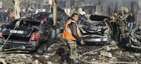
Al menos 30 personas murieron este lunes en Siria, la mayoría en zonas del sur y el este del país, en nuevos ataques de las tropas gubernamentales que coinciden con la llegada a Damasco de una delegación de observadores de la ONU.
El grupo opositor Comités de Coordinación Local (CCL) informó en un comunicado de la muerte de nueve personas en Deir el Zur (este), seis en Deraa (sur) y tres en Hama (centro), Alepo (norte), Ibleb (noroeste) y la periferia de Damasco, respectivamente, así como de otras dos en Qamishli (noreste) y una en Homs (centro).
Ocho de las víctimas mortales de Deir el Zur se registraron en la zona de Gasan Abud, bombardeada por las tropas del régimen, que también irrumpieron y atacaron otras localidades de la provincia, agregó la fuente. El CCL aseguró, asimismo, que once soldados desertaron en Gasan Abud poco antes de los ataques, e indicó que la región fue escenario de enfrentamientos entre las fuerzas gubernamentales y el rebelde Ejército Libre Sirio.
La provincia meridional de Deraa fue testigo, por su parte, de un amplio despliegue de las fuerzas de seguridad en varias de sus localidades, lo que hace temer a sus habitantes nuevas campañas de arrestos. Entre los fallecidos de Deraa figura una niña de 3 años, que murió en la población de Dael debido a los disparos efectuados desde un puesto de control militar.
Las tropas del régimen de Bachar al Asad también irrumpieron en algunas localidades de Hama e Idleb, que previamente fueron bombardeadas. En cuanto a lo sucedido en la periferia de Damasco, el grupo opositor denunció que Harasta, que ha estado sitiada, fue bombardeada y se registraron violentos enfrentamientos entre los rebeldes y el Ejército.
Los combates entre estos dos bandos se extendieron también este lunes al barrio acomodado de Mezeh en Damasco, donde según las autoridades murieron tres "terroristas" y un agente antidisturbios, aunque los rebeldes señalaron que habían causado decenas de bajas en las fuerzas gubernamentales.
Estos sucesos coincidieron con la llegada de una misión de observadores de la ONU y de la Organización de la Conferencia Islámica (OCI), enviada por el mediador internacional para Siria, Kofi Annan. El objetivo de la misión, que se ha trasladado a varias ciudades del país, es promover un alto el fuego y evaluar la situación humanitaria.
En cuanto al cese de las hostilidades para poder llevar ayuda a la población, el Comité Internacional de la Cruz Roja (CICR) anunció este lunes que Rusia se ha comprometido a apoyar su petición de que se impongan treguas de dos horas diarias durante los combates. Este acuerdo se alcanzó en una reunión en Moscú entre el presidente de la CICR, Jakob Kellenberger, y el ministro ruso de Exteriores, Serguéi Lavrov, cuyo país es uno de los pocos aliados del régimen de Damasco.
Testigos de los disparos
Un residente en el barrio, que pidió no ser identificado, también afirmó vía telefónica que escuchó "disparos de forma ininterrumpida durante toda la noche y hasta el amanecer".
"Los enfrentamientos comenzaron en torno a la medianoche y continuaron hasta las 6.00 (5.00 hora peninsular española), junto a al menos 15 explosiones. Sobre las 8.30 (7.30 hora peninsular española), escuché otro tiroteo. Ha sido una noche muy mala, nadie en este área puede haber dormido, porque el ruido era muy fuerte", agregó.
Otro habitante de Mezeh relató que los "intensos disparos y las fuertes explosiones" le hicieron pasar miedo, y que desde su casa tenía la sensación de que "había un intento de invadir el barrio".
Según la versión de los rebeldes, los choques comenzaron a las 1.00 hora local (medianoche en la España peninsular) y se desencadenaron después de que agentes y "shabiha" (sicarios) del régimen irrumpieran en las viviendas de varios vecinos para expulsarlos y robar sus pertenencias.
El lugarteniente del ELS señaló que sus hombres respondieron atacando una sede de la Seguridad Política y un puesto de control con proyectiles de mortero y ametralladoras, antes de retirarse a primera hora de esta mañana.
En algún momento, los choques se acercaron al aeropuerto de la capital, dijo Kurdi. Concluidos los enfrentamientos, efectivos del régimen bloquearon todos los accesos a Mezeh, indicaron los opositores Comités de Coordinación Local.
Misión de la ONU en Siria
Estos sucesos coincidieron con la llegada este domingo de una misión de observadores de la ONU y de la Organización de la Conferencia Islámica (OCI), enviada por Annan, para promover un alto el fuego y evaluar la situación humanitaria. Fuentes de ambos organismos en Damasco explicaron que una de las tareas de la misión será preparar una nueva visita de Annan, que ya estuvo en el país los pasados 10 y 11 de marzo para entrevistarse con Al Asad.
Según las fuentes, los observadores han comenzado ya su misión de evaluación, supervisada por las autoridades sirias, en Homs (centro), Hama (centro), Tartús (oeste), Latakia (oeste), Alepo (norte), Deraa (sur) y en Rif Damasco (en los alrededores de la capital) para analizar las necesidades humanitarias.
El viernes pasado, Annan mostró ante el Consejo de Seguridad de la ONU su decepción por las respuestas de Damasco a su mediación en la crisis del país, pero se mostró decidido a seguir negociando después de lograr el apoyo unánime de ese órgano. La ONU calcula que más de 8.000 personas han muerto desde el inicio de las protestas hace ahora un año, aunque la oposición cree que las víctimas mortales superan las 9.000.
2012-03-19T18:20:21Z
La comunidad internacional condena el tiroteo de Toulouse
La comunidad internacional condena el tiroteo de Toulouse
EP
Multitud de gobiernos, instituciones internacionales y organizaciones judías han manifestado su condena por el crimen.
"Condeno firmemente este crimen odioso y expreso todo el horror que nos inspira esta violencia vergonzosa", ha asegurado Durao Barroso.
Cuatro fallecidos en un tiroteo frente a una escuela judía en Toulouse.
Sarkozy: "En Francia no se asesina a niños de esa manera sin rendir cuentas".
Multitud de gobiernos, instituciones internacionales y organizaciones judías han manifestado su condena por el asesinato este lunes de un profesor y tres alumnos de una escuela judía de la ciudad francesa de Toulouse.El presidente de la Comisión Europea, José Manuel Durao Barroso, ha condenado con firmeza el "crimen odioso" de Toulouse. "En nombre de la Comisión, condeno firmemente este crimen odioso y expreso todo el horror que nos inspira esta violencia vergonzosa. No hay nada más intolerable que la muerte de un niño inocente", ha denunciado Barroso en un comunicado oficial.Desde Washington, un portavoz de la Casa Blanca, Tommy Vietor, ha indicado que están "muy entristecidos por la noticia del horrendo atentado perpetrado esta mañana". "Nuestros pensamientos y oraciones están con las familias y amigos de las víctimas y compartimos el duelo de la comunidad. Nos sumamos al Gobierno de Francia en la condena contra este acto de violencia atroz y no provocado en los términos más contundentes posibles", ha apostillado.Ha trascendido que el profesor fallecido en el tiroteo, Jonathan Sandler, tenía la doble nacionalidad francesa e israelí y precisamente desde el Estado judío, su primer ministro, Benjamin Netanyahu, ha condenado este "despreciable asesinato" y ha manifestado su confianza en que las autoridades francesas "harán todo lo posible para hallar al asesino y prometo que Israel ayudará a Francia a ello".Diversas organizaciones judías se han sumado también a la condena, como la Federación de Comunidades Judías de España. "Los judíos españoles manifestamos nuestra profunda tristeza por la muerte del profesor franco israelí, Jonathan Sandler, de 30 años, rabino de la escuela, de sus hijos Arieh de 3 años y Gabriel de 6 y de Miriam Monsonego de 8 años, hija del director del colegio", explica el grupo en un comunicado."La FCJE exige a las Autoridades que adopten las medidas pertinentes para velar por la seguridad de las minorías y que garantice el cumplimiento de la ley", concluye.La Conferencia Europea de Rabinos y el Congreso Judío Mundial (CJM) han expresado igualmente su pesar por el atentado. El presidente del CJM, Ronald S. Lauder, ha reaccionado con "horror" y "conmoción" ante la noticia. "Hoy, los judíos de todo el mundo están inmersos en el dolor y por este despreciable atentado terrorista. Atentar contra niños es un acto especialmente vil y enfermizo y nada lo puede justificar", ha señalado.También desde el Vaticano se ha condenado este "acto horrible y lleno de ignominia". "Suscita profunda indignación y desconcierto, así como la más firme repulsa y condena, también por la edad y la inocencia de las pequeñas víctimas y porque ha sido perpetrado en una pacífica institución educativa judía", ha indicado el director de la Oficina de Prensa de la Santa Sede, el padre Federico Lombardi
EP
- Multitud de gobiernos, instituciones internacionales y organizaciones judías han manifestado su condena por el crimen.
- "Condeno firmemente este crimen odioso y expreso todo el horror que nos inspira esta violencia vergonzosa", ha asegurado Durao Barroso.
- Cuatro fallecidos en un tiroteo frente a una escuela judía en Toulouse.
- Sarkozy: "En Francia no se asesina a niños de esa manera sin rendir cuentas".
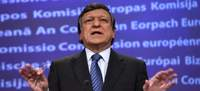
Multitud de gobiernos, instituciones internacionales y organizaciones judías han manifestado su condena por el asesinato este lunes de un profesor y tres alumnos de una escuela judía de la ciudad francesa de Toulouse.
El presidente de la Comisión Europea, José Manuel Durao Barroso, ha condenado con firmeza el "crimen odioso" de Toulouse. "En nombre de la Comisión, condeno firmemente este crimen odioso y expreso todo el horror que nos inspira esta violencia vergonzosa. No hay nada más intolerable que la muerte de un niño inocente", ha denunciado Barroso en un comunicado oficial.
Desde Washington, un portavoz de la Casa Blanca, Tommy Vietor, ha indicado que están "muy entristecidos por la noticia del horrendo atentado perpetrado esta mañana". "Nuestros pensamientos y oraciones están con las familias y amigos de las víctimas y compartimos el duelo de la comunidad. Nos sumamos al Gobierno de Francia en la condena contra este acto de violencia atroz y no provocado en los términos más contundentes posibles", ha apostillado.
Ha trascendido que el profesor fallecido en el tiroteo, Jonathan Sandler, tenía la doble nacionalidad francesa e israelí y precisamente desde el Estado judío, su primer ministro, Benjamin Netanyahu, ha condenado este "despreciable asesinato" y ha manifestado su confianza en que las autoridades francesas "harán todo lo posible para hallar al asesino y prometo que Israel ayudará a Francia a ello".
Diversas organizaciones judías se han sumado también a la condena, como la Federación de Comunidades Judías de España. "Los judíos españoles manifestamos nuestra profunda tristeza por la muerte del profesor franco israelí, Jonathan Sandler, de 30 años, rabino de la escuela, de sus hijos Arieh de 3 años y Gabriel de 6 y de Miriam Monsonego de 8 años, hija del director del colegio", explica el grupo en un comunicado.
"La FCJE exige a las Autoridades que adopten las medidas pertinentes para velar por la seguridad de las minorías y que garantice el cumplimiento de la ley", concluye.
La Conferencia Europea de Rabinos y el Congreso Judío Mundial (CJM) han expresado igualmente su pesar por el atentado. El presidente del CJM, Ronald S. Lauder, ha reaccionado con "horror" y "conmoción" ante la noticia. "Hoy, los judíos de todo el mundo están inmersos en el dolor y por este despreciable atentado terrorista. Atentar contra niños es un acto especialmente vil y enfermizo y nada lo puede justificar", ha señalado.
También desde el Vaticano se ha condenado este "acto horrible y lleno de ignominia". "Suscita profunda indignación y desconcierto, así como la más firme repulsa y condena, también por la edad y la inocencia de las pequeñas víctimas y porque ha sido perpetrado en una pacífica institución educativa judía", ha indicado el director de la Oficina de Prensa de la Santa Sede, el padre Federico Lombardi
2012-03-19T17:25:27Z
En los tiroteos de Toulouse y Montauban se usó la misma arma y la misma moto
En los tiroteos de Toulouse y Montauban se usó la misma arma y la misma moto
AGENCIAS
Se investigan varios vínculos entre los tres ataques, por lo que la misma persona sería sospechosa de haber asesinado a siete personas en nueve días.
Según informa el diario francés 'Le Point', la Policía francesa ha abierto una investigación que apunta a tres militares franceses de tendencia neonazi.
Sarkozy: "En Francia no se asesina a niños de esa manera sin rendir cuentas".
Ciudades europeas víctimas de tiroteos: de Oslo a Olot.
Una de las dos armas con las que un hombre disparó este lunes contra un colegio judío en Toulouse causando cuatro muertos, tres de ellos niños, es la misma que se utilizó la semana pasada para el asesinato de varios militares en esa localidad y en la vecina Montauban, han indicado fuentes de la investigación. También la motocicleta que utilizó y se dio a la fuga el autor de los tiroteos en los tres casos es la misma, según las mencionadas fuentes. Se trataría de una Yamaha robada diez días atrás en Toulouse.Los análisis balísticos realizados en el lugar, tal y como adelantó la emisora "Europe 1" con esas fuentes, permiten establecer formalmente un vínculo entre los tres ataques, en los que se utilizó una misma arma de calibre 11,43 mm. En el incidente de esta mañana un individuo que había llegado en moto a la escuela Ozar Hatorah abrió fuego indiscriminadamente contra las personas que esperaban a la entrada del colegio, niños y adultos, y posteriormente se dio a la fuga.La Policía sospecha de tres militares neonazisLa Fiscalía antiterrorista de París se ha hecho cargo de la investigación de estos tres ataques, aunque según informa el diario 'Le Point' la Policía francesa ha abierto una línea de investigación que apunta a tres militares franceses de tendencia neonazi.Los tres saltaron a la fama en 2008, cuando la prensa gala publicó una fotografía de tres miembros del 17º Regimiento de Ingenieros Paracaidistas de Montauban ante una bandera con una cruz gamada y haciendo el saludo nazi.Según las fuentes consultadas por 'Le Point', el perfil de los tres se corresponde con el de los responsables de los últimos tiroteos en Toulouse y Montauban: hombre musculoso, con tatuajes y vestido de negro.Un militar, Jamel Benserhir, ahora fuera del Ejército, denunció a sus superiores a estos tres soldados por sus tendencias neonazis y fue entonces cuando fue hallada la fotografía, que fue publicada en el diario regional 'La Dépêche du Midi' y en el semanario humorístico 'Le Canard Enchaîné'.Tras la denuncia de Benserhir, el comandante del 17º Regimiento de Ingenieros Paracaidistas, Michel Esparsa, presentó una denuncia contra los tres soldados, que admitieron los hechos y fueron "severamente castigados".Siete personas asesinadas en nueve díasEl primero ocurrió el pasado día 11 en Toulouse, cuando un suboficial del primer regimiento de paracaidistas, que iba vestido de civil, fue asesinado a tiros en un barrio del este de esa localidad. Cuatro días más tarde, en Montauban, tres miembros del 17 regimiento de paracaidistas, uniformados, fueron tiroteados junto a un cajero automático: dos de ellos, de 24 y 26 años, fallecieron en el acto y el tercero, de 28, resultó herido grave. La similitud del "modus operandi" fue destacada por el presidente francés, Nicolas Sarkozy, pues los tres casos fueron cometidos por un motorista que no se quitó el casco para disparar. Poco después del ataque de este lunes se conoció que dos sinagogas de dos distritos de París recibieron respectivamente, este lunes y el fin de semana, sendos mensajes amenazantes: "sois el pueblo de Satán, el infierno os espera". De esta investigación se encarga la Brigada de Represión de la Delincuencia contra la Persona de la Policía Judicial de la capital, que consultada por Efe declinó confirmar o desmentir dichas amenazas
AGENCIAS
- Se investigan varios vínculos entre los tres ataques, por lo que la misma persona sería sospechosa de haber asesinado a siete personas en nueve días.
- Según informa el diario francés 'Le Point', la Policía francesa ha abierto una investigación que apunta a tres militares franceses de tendencia neonazi.
- Sarkozy: "En Francia no se asesina a niños de esa manera sin rendir cuentas".
- Ciudades europeas víctimas de tiroteos: de Oslo a Olot.
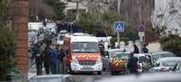
Una de las dos armas con las que un hombre disparó este lunes contra un colegio judío en Toulouse causando cuatro muertos, tres de ellos niños, es la misma que se utilizó la semana pasada para el asesinato de varios militares en esa localidad y en la vecina Montauban, han indicado fuentes de la investigación.
También la motocicleta que utilizó y se dio a la fuga el autor de los tiroteos en los tres casos es la misma, según las mencionadas fuentes. Se trataría de una Yamaha robada diez días atrás en Toulouse.
Los análisis balísticos realizados en el lugar, tal y como adelantó la emisora "Europe 1" con esas fuentes, permiten establecer formalmente un vínculo entre los tres ataques, en los que se utilizó una misma arma de calibre 11,43 mm.
En el incidente de esta mañana un individuo que había llegado en moto a la escuela Ozar Hatorah abrió fuego indiscriminadamente contra las personas que esperaban a la entrada del colegio, niños y adultos, y posteriormente se dio a la fuga.
La Policía sospecha de tres militares neonazis
La Fiscalía antiterrorista de París se ha hecho cargo de la investigación de estos tres ataques, aunque según informa el diario 'Le Point' la Policía francesa ha abierto una línea de investigación que apunta a tres militares franceses de tendencia neonazi.
Los tres saltaron a la fama en 2008, cuando la prensa gala publicó una fotografía de tres miembros del 17º Regimiento de Ingenieros Paracaidistas de Montauban ante una bandera con una cruz gamada y haciendo el saludo nazi.
Según las fuentes consultadas por 'Le Point', el perfil de los tres se corresponde con el de los responsables de los últimos tiroteos en Toulouse y Montauban: hombre musculoso, con tatuajes y vestido de negro.
Un militar, Jamel Benserhir, ahora fuera del Ejército, denunció a sus superiores a estos tres soldados por sus tendencias neonazis y fue entonces cuando fue hallada la fotografía, que fue publicada en el diario regional 'La Dépêche du Midi' y en el semanario humorístico 'Le Canard Enchaîné'.
Tras la denuncia de Benserhir, el comandante del 17º Regimiento de Ingenieros Paracaidistas, Michel Esparsa, presentó una denuncia contra los tres soldados, que admitieron los hechos y fueron "severamente castigados".
Siete personas asesinadas en nueve días
El primero ocurrió el pasado día 11 en Toulouse, cuando un suboficial del primer regimiento de paracaidistas, que iba vestido de civil, fue asesinado a tiros en un barrio del este de esa localidad.
Cuatro días más tarde, en Montauban, tres miembros del 17 regimiento de paracaidistas, uniformados, fueron tiroteados junto a un cajero automático: dos de ellos, de 24 y 26 años, fallecieron en el acto y el tercero, de 28, resultó herido grave.
La similitud del "modus operandi" fue destacada por el presidente francés, Nicolas Sarkozy, pues los tres casos fueron cometidos por un motorista que no se quitó el casco para disparar.
Poco después del ataque de este lunes se conoció que dos sinagogas de dos distritos de París recibieron respectivamente, este lunes y el fin de semana, sendos mensajes amenazantes: "sois el pueblo de Satán, el infierno os espera".
De esta investigación se encarga la Brigada de Represión de la Delincuencia contra la Persona de la Policía Judicial de la capital, que consultada por Efe declinó confirmar o desmentir dichas amenazas
2012-03-19T14:49:07Z
Detienen en Italia a 47 personas, entre ellas 16 jueces, por asociación mafiosa
Detienen en Italia a 47 personas, entre ellas 16 jueces, por asociación mafiosa
EFE
La policía financiera ha desmantelado una red criminal formada por miembros del clan camorrista Fabbrocino, empresarios y funcionarios del sector tributario.
Se han confiscado bienes por valor de 1.000 millones de euros, entre cuentas corrientes, acciones, actividades financieras, terrenos, edificios y vehículos.
Según las investigaciones, la organización había construido una red de facturaciones falsas para el lavado de dinero procedente de actividades ilegales.
La Guardia di Finanza (policía financiera italiana) arrestó este lunes a 47 personas, entre ellas 16 jueces tributarios, otros funcionarios y miembros del clan Fabbrocino de la Camorra, la mafia napolitana, bajo la acusación de asociación criminal. Según un comunicado de la policía financiera, las investigaciones han permitido desmantelar una red criminal formada por miembros del clan camorrista Fabbrocino (que gestiona las actividades ilegales en las localidades de Nola y en el área vesuviana), empresarios especializados en la compraventa inmobiliaria y hotelera y funcionarios que trabajaban en el sector tributario.Tras la operación que se ha realizado entre la región de Campania (sur) y Lombardía (norte) 22 personas han sido encarceladas, 25 puestas bajo arresto domiciliario y a 13 se les ha comunicado la orden de no abandonar la provincia de Nápoles.Asimismo, se ha comunicado que han sido confiscados bienes por un valor de 1.000 millones de euros, entre cuentas corrientes, acciones, actividades financieras, terrenos, edificios y vehículos.Lavado de dineroAdemás de la asociación mafiosa, los detenidos están acusados de lavado de dinero procedente de actividades ilegales y corrupción en actos judiciales, entre otros.Según las investigaciones, la organización había construido una red de facturaciones falsas para el lavado de dinero que después llegaba a bancos de Bélgica, Liechtenstein, Luxemburgo y Suiza.Si la policía financiera lograba descubrir que se habían realizado falsas facturas y evasión fiscal, los empresarios impugnaban las multas y los jueces fallaban a su favor.
EFE
- La policía financiera ha desmantelado una red criminal formada por miembros del clan camorrista Fabbrocino, empresarios y funcionarios del sector tributario.
- Se han confiscado bienes por valor de 1.000 millones de euros, entre cuentas corrientes, acciones, actividades financieras, terrenos, edificios y vehículos.
- Según las investigaciones, la organización había construido una red de facturaciones falsas para el lavado de dinero procedente de actividades ilegales.
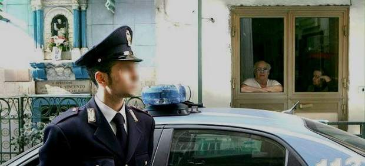
La Guardia di Finanza (policía financiera italiana) arrestó este lunes a 47 personas, entre ellas 16 jueces tributarios, otros funcionarios y miembros del clan Fabbrocino de la Camorra, la mafia napolitana, bajo la acusación de asociación criminal.
Según un comunicado de la policía financiera, las investigaciones han permitido desmantelar una red criminal formada por miembros del clan camorrista Fabbrocino (que gestiona las actividades ilegales en las localidades de Nola y en el área vesuviana), empresarios especializados en la compraventa inmobiliaria y hotelera y funcionarios que trabajaban en el sector tributario.
Tras la operación que se ha realizado entre la región de Campania (sur) y Lombardía (norte) 22 personas han sido encarceladas, 25 puestas bajo arresto domiciliario y a 13 se les ha comunicado la orden de no abandonar la provincia de Nápoles.
Asimismo, se ha comunicado que han sido confiscados bienes por un valor de 1.000 millones de euros, entre cuentas corrientes, acciones, actividades financieras, terrenos, edificios y vehículos.
Lavado de dinero
Además de la asociación mafiosa, los detenidos están acusados de lavado de dinero procedente de actividades ilegales y corrupción en actos judiciales, entre otros.
Según las investigaciones, la organización había construido una red de facturaciones falsas para el lavado de dinero que después llegaba a bancos de Bélgica, Liechtenstein, Luxemburgo y Suiza.
Si la policía financiera lograba descubrir que se habían realizado falsas facturas y evasión fiscal, los empresarios impugnaban las multas y los jueces fallaban a su favor.
2012-03-19T12:09:44Z
Una chinche tiene en jaque a 21 países de América Latina
Una chinche tiene en jaque a 21 países de América Latina
R. QUEIMALIÑOS
La enfermedad de Chagas afecta en la actualidad a 10 millones de personas y mata al año a 12.500.
El tratamiento en la primera etapa de esta enfermedad es sencillo y eficaz, pero es complicado reconocerla, porque sus síntomas son silenciosos y muy genéricos.
Los fármacos tienen más de 40 años y no existe vacuna.
Enfermedades olvidadas (I): Tres millones de niños, infectados con el VIH.
Enfermedades olvidadas (II): La ciencia busca una solución para la malaria.
Enfermedades olvidadas (III): La tuberculosis causa 1,7 millones de muertes.
Enfermedades olvidadas (IV): La mosca tsé-tsé adormece a 36 países de África.
Los hábitats naturales de la chinche vinchuca son las grietas de las paredes y los tejados de las viviendas de adobe o paja. Estos insectos permanecen ocultos durante el día, pero al anochecer empiezan la caza. Su alimento básico es la sangre humana. Así que la vinchuca busca a su presa, le pica en una zona expuesta de la piel y defeca a escasos centímetros de la herida. La persona atacada se rasca instintivamente, empuja las heces hacia la picadura y los parásitos penetran en el organismo. Durante la primera fase de la enfermedad, llamada mal de Chagas, estos organismos circularán libremente por el torrente sanguíneo. El tratamiento en esta etapa es sencillo y eficaz, pero es complicado reconocer la enfermedad, porque sus síntomas son silenciosos y muy genéricos. La segunda etapa es más compleja: los parásitos permanecen ocultos durante años en el músculo cardiaco (el 30% de los pacientes presentarán trastornos en el corazón) y digestivo (el 10% de los enfermos padecerán alteraciones en el esófago) y, sin tratamiento, la infección causará la muerte. No existe vacuna para el mal de Chagas y la investigación es precaria, básicamente porque afecta a sectores humildes de América Latina y está asociada a la exclusión socioeconómica. De hecho, la dolencia pertenece a la categoría de «enfermedades olvidadas», según la Organización Mundial de la Salud (OMS).El mal de Chagas es endémico en 21 países. Afecta a 10 millones de personas y provoca 12.500 muertes al año. La inconsciencia es el primer problema de la enfermedad. Alejandra (en la foto) explica en un vídeo grabado por Médicos Sin Fronteras (MSF) que ella había convivido con vinchucas durante su infancia, pero no era consciente de que eran portadoras de enfermedades. Es una constante en las zonas rurales y es el principal reto de MSF: concienciar a los Gobiernos de países endémicos sobre la necesidad de invertir en campañas informativas, desarrollar nuevas pruebas de diagnóstico y mejorar los medicamentos. Pero falta inversión económica. De hecho, la OMS se había marcado como objetivo erradicar la enfermedad en 2010, y todavía se producen 50.000 infecciones anuales.Solo existen dos tratamientos para el Chagas, benznidazol y nifurtimox, y ambos fármacos se desarrollaron hace más de 40 años en el marco de investigaciones que no abordaban concretamente la enfermedad. El único laboratorio en el mundo que produce el benznidazol (el Laboratorio Farmacéutico Público de Pernambuco) alcanzó hace tres meses un acuerdo con la organización Iniciativa Medicamentos para las Enfermedades Olvidadas (DNDi) para comercializar la fórmula pediátrica del fármaco (antes no existía) y distribuirlo a precio de coste en los países latinoamericanos. Sin embargo, ninguno de los dos medicamentos está adaptado a embarazadas. Investigadores españoles calculan que alrededor de 67.000 personas están infectadas en España a consecuencia de migraciones y viajes internacionales.¿Sabías que...?
... La enfermedad fue descubierta por el médico brasileño Carlos Chagas en 1909?
... Hay 25 millones de personas que corren el riesgo de enfermar?
... Si el Chagas no se trata, los enfermos permanecen décadas en fase crónica?
... La tasa de éxito del benznidazol en la primera fase de la dolencia es del 100%?
... Bolivia es el país más afectado por el Chagas?
... Médicos Sin Fronteras ha tratado a más de 51.000 enfermos desde 1999?
R. QUEIMALIÑOS
- La enfermedad de Chagas afecta en la actualidad a 10 millones de personas y mata al año a 12.500.
- El tratamiento en la primera etapa de esta enfermedad es sencillo y eficaz, pero es complicado reconocerla, porque sus síntomas son silenciosos y muy genéricos.
- Los fármacos tienen más de 40 años y no existe vacuna.
- Enfermedades olvidadas (I): Tres millones de niños, infectados con el VIH.
- Enfermedades olvidadas (II): La ciencia busca una solución para la malaria.
- Enfermedades olvidadas (III): La tuberculosis causa 1,7 millones de muertes.
- Enfermedades olvidadas (IV): La mosca tsé-tsé adormece a 36 países de África.
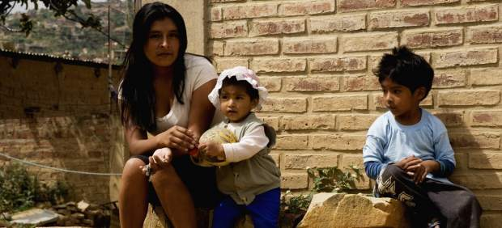
Los hábitats naturales de la chinche vinchuca son las grietas de las paredes y los tejados de las viviendas de adobe o paja. Estos insectos permanecen ocultos durante el día, pero al anochecer empiezan la caza. Su alimento básico es la sangre humana. Así que la vinchuca busca a su presa, le pica en una zona expuesta de la piel y defeca a escasos centímetros de la herida. La persona atacada se rasca instintivamente, empuja las heces hacia la picadura y los parásitos penetran en el organismo. Durante la primera fase de la enfermedad, llamada mal de Chagas, estos organismos circularán libremente por el torrente sanguíneo.
El tratamiento en esta etapa es sencillo y eficaz, pero es complicado reconocer la enfermedad, porque sus síntomas son silenciosos y muy genéricos. La segunda etapa es más compleja: los parásitos permanecen ocultos durante años en el músculo cardiaco (el 30% de los pacientes presentarán trastornos en el corazón) y digestivo (el 10% de los enfermos padecerán alteraciones en el esófago) y, sin tratamiento, la infección causará la muerte. No existe vacuna para el mal de Chagas y la investigación es precaria, básicamente porque afecta a sectores humildes de América Latina y está asociada a la exclusión socioeconómica. De hecho, la dolencia pertenece a la categoría de «enfermedades olvidadas», según la Organización Mundial de la Salud (OMS).
El mal de Chagas es endémico en 21 países. Afecta a 10 millones de personas y provoca 12.500 muertes al año. La inconsciencia es el primer problema de la enfermedad. Alejandra (en la foto) explica en un vídeo grabado por Médicos Sin Fronteras (MSF) que ella había convivido con vinchucas durante su infancia, pero no era consciente de que eran portadoras de enfermedades.
Es una constante en las zonas rurales y es el principal reto de MSF: concienciar a los Gobiernos de países endémicos sobre la necesidad de invertir en campañas informativas, desarrollar nuevas pruebas de diagnóstico y mejorar los medicamentos. Pero falta inversión económica. De hecho, la OMS se había marcado como objetivo erradicar la enfermedad en 2010, y todavía se producen 50.000 infecciones anuales.
Solo existen dos tratamientos para el Chagas, benznidazol y nifurtimox, y ambos fármacos se desarrollaron hace más de 40 años en el marco de investigaciones que no abordaban concretamente la enfermedad. El único laboratorio en el mundo que produce el benznidazol (el Laboratorio Farmacéutico Público de Pernambuco) alcanzó hace tres meses un acuerdo con la organización Iniciativa Medicamentos para las Enfermedades Olvidadas (DNDi) para comercializar la fórmula pediátrica del fármaco (antes no existía) y distribuirlo a precio de coste en los países latinoamericanos. Sin embargo, ninguno de los dos medicamentos está adaptado a embarazadas. Investigadores españoles calculan que alrededor de 67.000 personas están infectadas en España a consecuencia de migraciones y viajes internacionales.
¿Sabías que...?
- ... La enfermedad fue descubierta por el médico brasileño Carlos Chagas en 1909?
- ... Hay 25 millones de personas que corren el riesgo de enfermar?
- ... Si el Chagas no se trata, los enfermos permanecen décadas en fase crónica?
- ... La tasa de éxito del benznidazol en la primera fase de la dolencia es del 100%?
- ... Bolivia es el país más afectado por el Chagas?
- ... Médicos Sin Fronteras ha tratado a más de 51.000 enfermos desde 1999?
2012-03-19T08:10:36Z
Tres niños y un adulto han muerto en un tiroteo frente a una escuela judía en Toulouse
Tres niños y un adulto han muerto en un tiroteo frente a una escuela judía en Toulouse
20MINUTOS.ES
Los fallecidos son tres alumnos y uno de sus profesores.
La policía busca al autor, un motorista que podría ser el mismo que asesinó la semana pasada a un militar en Toulouse y otros dos en Montauban.
La munición utilizada coincidiría en los tres casos.
Nicolas Sarkozy ha calificado los hechos de "tragedia nacional", asegura que encontrarán al asesino y que no cederán "ante el terror".
Tres niños y un adulto fallecieron este lunes tras un tiroteo frente a un privado colegio y sinagoga judía situado en la ciudad francesa de Toulouse, al sur del país, según informó el fiscal de la República, Michel Valet. También hay varios heridos de distinta gravedad.El centro educativo y religioso es el Liceo Ozar Hatorah, situado en el número 33 de la calle Jules Dalou, en una zona residencial del barrio de Bonnefoy, en la zona noreste de la ciudad.El ataque, según fuentes policiales, se produjo sobre las 8.00 horas de este lunes, cuando un pistolero desconocido disparó varias veces contra un grupo de personas que se encontraba a las puertas del centro. Tras descargar su arma, huyó del lugar de los hechos en un ciclomotor, según testigos citados por las agencias AFP y Reuters.Los fallecidos son un profesor de religión de 30 años, sus hijos de 3 y 6 años y una niña de 8, según ha informado un portavoz del Ministerio de Interior francés. El fiscal de Toulouse Michel Valet indica, por su parte, que la niña tenía 10 años y no 8, como dice Interior.Refuerzo de la vigilanciaEl presidente francés, Nicolas Sarkozy, afirmó desde la escuela judía que fue tiroteada hoy en Toulouse, suceso en el que murieron cuatro personas, tres de ellos niños, que Francia no cederá al terror y que "el odio no puede ganar". "No debemos ceder ante el terror", subrayó en la escuela Sarkozy, quien resaltó "que la República es mucho más fuerte" que el odio y calificó los hechos de "tragedia nacional". Sarkozy insistió en que se encontrará al asesino y pidió confianza en las autoridades.El presidente francés, que anunció que este martes se guardará un minuto de silencio en todas las escuelas del país, hizo hincapié en que "este asesinato no afecta sólo a la comunidad judía. Toda la comunidad nacional está conmocionada". Además, la Unión de Estudiantes Judíos de Francia convocó una marcha silenciosa entre las plazas de la República y de la Bastilla de París a las 20.30 horas para rendir homenaje "a las víctimas del atentado antisemita de Toulouse". Dicho acto cuenta también con el apoyo del Movimiento contra el Racismo y por la Amistad de los Pueblos (MRAP).El ministro de Interior francés, Claude Guéant, ha ordenado "reforzar la vigilancia" en torno a las escuelas judías francesas después del ataque, especialmente en las situadas en el suroeste del país. El Gran Rabino de Francia, Gilles Bernheim, declaró su consternación por el incidente: "Estoy horrorizado por lo ocurrido esta mañana en Toulouse a la escuela judía". "Estamos siguiendo con consternación las informaciones que llegan y contamos con que las autoridades legales de Francia descifren este crimen y descubran lo que pasó en este acto criminal y lleven a los responsables ante la justicia", afirmó el portavoz del Ministerio de Exteriores de Israel, Lior Ben Dor."Una tragedia nacional"Las autoridades francesas tratan de averiguar si el ataque tiene relación con los dos tiroteos registrados en las últimas semanas en la zona sur de Francia.El jueves 15 de marzo, dos militares franceses murieron abatidos por disparos mientras retiraban dinero de un cajero automático en el municipio de Montauban. El incidente ocurrió cerca del cuartel del 17º Regimiento de Ingenieros Paracaidistas, al que pertenecían las víctimas. Las primeras investigaciones apuntaron a que el autor habría sido una persona que circulaba en una moto con el casco puesto y la visera bajada.El autor de los disparos sería, según la investigación, el mismo que cuatro días antes, el domingo 11, asesinó a otro soldado en Toulouse. Las balas habrían sido disparadas por la misma pistola. Esta munición, del calibre 11,43, coincidiría con la utilizada este lunes en el ataque al colegio judío.
20MINUTOS.ES
- Los fallecidos son tres alumnos y uno de sus profesores.
- La policía busca al autor, un motorista que podría ser el mismo que asesinó la semana pasada a un militar en Toulouse y otros dos en Montauban.
- La munición utilizada coincidiría en los tres casos.
- Nicolas Sarkozy ha calificado los hechos de "tragedia nacional", asegura que encontrarán al asesino y que no cederán "ante el terror".
Tres niños y un adulto fallecieron este lunes tras un tiroteo frente a un privado colegio y sinagoga judía situado en la ciudad francesa de Toulouse, al sur del país, según informó el fiscal de la República, Michel Valet. También hay varios heridos de distinta gravedad.
El centro educativo y religioso es el Liceo Ozar Hatorah, situado en el número 33 de la calle Jules Dalou, en una zona residencial del barrio de Bonnefoy, en la zona noreste de la ciudad.
El ataque, según fuentes policiales, se produjo sobre las 8.00 horas de este lunes, cuando un pistolero desconocido disparó varias veces contra un grupo de personas que se encontraba a las puertas del centro. Tras descargar su arma, huyó del lugar de los hechos en un ciclomotor, según testigos citados por las agencias AFP y Reuters.
Los fallecidos son un profesor de religión de 30 años, sus hijos de 3 y 6 años y una niña de 8, según ha informado un portavoz del Ministerio de Interior francés. El fiscal de Toulouse Michel Valet indica, por su parte, que la niña tenía 10 años y no 8, como dice Interior.
Refuerzo de la vigilancia
El presidente francés, Nicolas Sarkozy, afirmó desde la escuela judía que fue tiroteada hoy en Toulouse, suceso en el que murieron cuatro personas, tres de ellos niños, que Francia no cederá al terror y que "el odio no puede ganar".
"No debemos ceder ante el terror", subrayó en la escuela Sarkozy, quien resaltó "que la República es mucho más fuerte" que el odio y calificó los hechos de "tragedia nacional". Sarkozy insistió en que se encontrará al asesino y pidió confianza en las autoridades.
El presidente francés, que anunció que este martes se guardará un minuto de silencio en todas las escuelas del país, hizo hincapié en que "este asesinato no afecta sólo a la comunidad judía. Toda la comunidad nacional está conmocionada". Además, la Unión de Estudiantes Judíos de Francia convocó una marcha silenciosa entre las plazas de la República y de la Bastilla de París a las 20.30 horas para rendir homenaje "a las víctimas del atentado antisemita de Toulouse". Dicho acto cuenta también con el apoyo del Movimiento contra el Racismo y por la Amistad de los Pueblos (MRAP).
El ministro de Interior francés, Claude Guéant, ha ordenado "reforzar la vigilancia" en torno a las escuelas judías francesas después del ataque, especialmente en las situadas en el suroeste del país.
El Gran Rabino de Francia, Gilles Bernheim, declaró su consternación por el incidente: "Estoy horrorizado por lo ocurrido esta mañana en Toulouse a la escuela judía". "Estamos siguiendo con consternación las informaciones que llegan y contamos con que las autoridades legales de Francia descifren este crimen y descubran lo que pasó en este acto criminal y lleven a los responsables ante la justicia", afirmó el portavoz del Ministerio de Exteriores de Israel, Lior Ben Dor.
"Una tragedia nacional"
Las autoridades francesas tratan de averiguar si el ataque tiene relación con los dos tiroteos registrados en las últimas semanas en la zona sur de Francia.
El jueves 15 de marzo, dos militares franceses murieron abatidos por disparos mientras retiraban dinero de un cajero automático en el municipio de Montauban. El incidente ocurrió cerca del cuartel del 17º Regimiento de Ingenieros Paracaidistas, al que pertenecían las víctimas. Las primeras investigaciones apuntaron a que el autor habría sido una persona que circulaba en una moto con el casco puesto y la visera bajada.
El autor de los disparos sería, según la investigación, el mismo que cuatro días antes, el domingo 11, asesinó a otro soldado en Toulouse. Las balas habrían sido disparadas por la misma pistola. Esta munición, del calibre 11,43, coincidiría con la utilizada este lunes en el ataque al colegio judío.
2012-03-19T06:03:12Z
Al menos 22 muertos en Siria mientras la oposición convoca nuevas protestas
Al menos 22 muertos en Siria mientras la oposición convoca nuevas protestas
EFE
Nueve personas fallecieron en Idleb y una niña en Homs.
Un responsable de la Cruz Roja viaja Rusia para que medie en Siria.
De médico tranquilo a represor implacable: ¿Quién es Al Asad?
Al menos 22 personas murieron este domingo en Siria, entre ellas siete militares rebeldes y dos menores, en una nueva jornada de violencia marcada también por los llamamientos de la oposición a los sirios para que se manifiesten en recuerdo del primer aniversario del inicio de las protestas.La plataforma opositora Comités de Coordinación Local (CCL) explicó en un comunicado que nueve personas perdieron la vida en actos de violencia en la provincia de Idleb (norte), cuatro más en la periferia de Damasco, dos en Deraa (sur), dos en Homs (centro), dos en Qalmun (centro), y una en Deir el Zur (este).Además, una mujer y un policía murieron en un atentado con coche bomba perpetrado esta mañana en la ciudad septentrional de Alepo, la segunda del país, que también causó una treintena de heridos.Entre las víctimas mortales de Idleb figuran un niño y dos jóvenes, que perecieron en la localidad de Mereyan cuando, según la oposición, fuerzas del régimen sirio quemaron unas treinta casas y numerosos vehículos.De las poblaciones situadas en los alrededores de Damasco, la más afectada por la violencia este domingo ha sido Quetana, donde el Ejército sirio irrumpió y se han escuchado varias explosionesEl grupo opositor denunció que esta localidad ha sido blanco de una campaña de arrestos y que las tropas destruyeron algunas viviendas.En Homs, uno de los principales feudos opositores, una de las víctimas mortales es una niña de siete años, que al parecer fue abatida por los disparos de las fuerzas de seguridad.Mientras, en Deraa, donde hace un año prendió con fuerza la revuelta contra el régimen de Bachar al Asad, varias localidades están sitiadas y son escenario de un gran despliegue policial para evitar manifestaciones.Fue precisamente en Deraa donde el 18 de marzo de 2011 se registró la primera víctima mortal de las protestas sirias, que desde entonces han devenido en una espiral de violencia, azuzada por la represión del régimen y las acciones de la oposición armada, y que ha segado la vida de más de 8.000 personas, según la ONU.A lo largo de este domingo, distintas organizaciones opositoras han realizado llamamientos a sus seguidores a salir a la calle y rememorar el que califican como el primer aniversario de la insurrección.La Cruz Roja media con RusiaPor otra parte, el presidente del Comité Internacional de la Cruz Roja (CICR), Jakob Kellenberger, ha viajado a Moscú para entrevistarse con el ministro ruso de Asuntos Exteriores, Sergei Lavrov, sobre la situación en Siria, anunció el organismo.El máximo responsable de la Cruz Roja Internacional insistirá en la capital rusa en la necesidad de un cese temporal de las hostilidades, de al menos dos horas al día, con el fin de evacuar de manera segura a los heridos y aportar rápidamente ayuda vital a los civiles que más lo necesiten.
EFE
- Nueve personas fallecieron en Idleb y una niña en Homs.
- Un responsable de la Cruz Roja viaja Rusia para que medie en Siria.
- De médico tranquilo a represor implacable: ¿Quién es Al Asad?
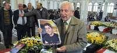
Al menos 22 personas murieron este domingo en Siria, entre ellas siete militares rebeldes y dos menores, en una nueva jornada de violencia marcada también por los llamamientos de la oposición a los sirios para que se manifiesten en recuerdo del primer aniversario del inicio de las protestas.
La plataforma opositora Comités de Coordinación Local (CCL) explicó en un comunicado que nueve personas perdieron la vida en actos de violencia en la provincia de Idleb (norte), cuatro más en la periferia de Damasco, dos en Deraa (sur), dos en Homs (centro), dos en Qalmun (centro), y una en Deir el Zur (este).
Además, una mujer y un policía murieron en un atentado con coche bomba perpetrado esta mañana en la ciudad septentrional de Alepo, la segunda del país, que también causó una treintena de heridos.
Entre las víctimas mortales de Idleb figuran un niño y dos jóvenes, que perecieron en la localidad de Mereyan cuando, según la oposición, fuerzas del régimen sirio quemaron unas treinta casas y numerosos vehículos.
De las poblaciones situadas en los alrededores de Damasco, la más afectada por la violencia este domingo ha sido Quetana, donde el Ejército sirio irrumpió y se han escuchado varias explosiones
El grupo opositor denunció que esta localidad ha sido blanco de una campaña de arrestos y que las tropas destruyeron algunas viviendas.
En Homs, uno de los principales feudos opositores, una de las víctimas mortales es una niña de siete años, que al parecer fue abatida por los disparos de las fuerzas de seguridad.
Mientras, en Deraa, donde hace un año prendió con fuerza la revuelta contra el régimen de Bachar al Asad, varias localidades están sitiadas y son escenario de un gran despliegue policial para evitar manifestaciones.
Fue precisamente en Deraa donde el 18 de marzo de 2011 se registró la primera víctima mortal de las protestas sirias, que desde entonces han devenido en una espiral de violencia, azuzada por la represión del régimen y las acciones de la oposición armada, y que ha segado la vida de más de 8.000 personas, según la ONU.
A lo largo de este domingo, distintas organizaciones opositoras han realizado llamamientos a sus seguidores a salir a la calle y rememorar el que califican como el primer aniversario de la insurrección.
La Cruz Roja media con Rusia
Por otra parte, el presidente del Comité Internacional de la Cruz Roja (CICR), Jakob Kellenberger, ha viajado a Moscú para entrevistarse con el ministro ruso de Asuntos Exteriores, Sergei Lavrov, sobre la situación en Siria, anunció el organismo.
El máximo responsable de la Cruz Roja Internacional insistirá en la capital rusa en la necesidad de un cese temporal de las hostilidades, de al menos dos horas al día, con el fin de evacuar de manera segura a los heridos y aportar rápidamente ayuda vital a los civiles que más lo necesiten.
2012-03-19T00:38:18Z
Las Damas de Blanco cubanas denuncian más de una treintena de detenciones
Las Damas de Blanco cubanas denuncian más de una treintena de detenciones
EFE
El grupo de disidentes cubanas denunció de varias de sus integrantes, entre ellas su portavoz, Berta Soler.
Según informan, al menos 33 mujeres fueron interceptadas por la policía.
El grupo pidió al Papa Benedicto XVI que les conceda "un minuto" durante la visita que el Pontífice realizará del 26 al 28 de este a la isla.
El grupo de disidentes cubanas Damas de Blanco denunció este domingo la detención en las últimas horas de varias de sus integrantes, entre ellas su portavoz, Berta Soler.Odelis Sanabria, una de las integrantes, dijo que al menos 33 mujeres, entre ellas Soler, fueron interceptadas por la policía cuando se dirigían a la habanera Iglesia de Santa Rita, donde todos los domingos acuden a misa y después desfilan por la calle como acto pacífico en favor de los derechos humanos."Hasta el momento no se sabe en qué lugar las tienen", dijo Sanabria a los periodistas.Este sábado también hubo arrestos cuando el grupo se reunió en su sede, la casa de su fallecida líder, Laura Pollán, en el barrio de Centro Habana, donde tenían previsto conmemorar el noveno aniversario de la oleada represiva contra 75 opositores que fueron condenados durante la llamada "Primavera Negra" de 2003.Cuando parte del grupo, en el que figuraban Berta Soler y Laura Labrada, hija de Laura Pollán, salió a la calle, fueron arrestadas, conducidas a una estación policial y unas horas después liberadas, según refirió Sanabria."Agravamiento" de la represiónLas "Damas de Blanco" han insistido en denunciar que se ha producido en las últimas semanas "un agravamiento" de la represión contra la disidencia interna y especial contra ellas.En particular han denunciado acciones de hostigamiento, arrestos temporales, maltrato, actos de repudio, advertencias y amenazas de la policía política en La Habana, y también en otras provincias como Pinar del Río, en la ciudad central de Santa Clara y en las orientales Holguín y Santiago de Cuba.El grupo femenino, que aboga en favor de la liberación de los presos políticos y el respeto a los derechos humanos en la isla, ha dicho que pidió al Papa Benedicto XVI que les conceda "un minuto" durante la visita que el Pontífice realizará del 26 al 28 de este a la isla.
EFE
- El grupo de disidentes cubanas denunció de varias de sus integrantes, entre ellas su portavoz, Berta Soler.
- Según informan, al menos 33 mujeres fueron interceptadas por la policía.
- El grupo pidió al Papa Benedicto XVI que les conceda "un minuto" durante la visita que el Pontífice realizará del 26 al 28 de este a la isla.
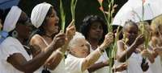
El grupo de disidentes cubanas Damas de Blanco denunció este domingo la detención en las últimas horas de varias de sus integrantes, entre ellas su portavoz, Berta Soler.
Odelis Sanabria, una de las integrantes, dijo que al menos 33 mujeres, entre ellas Soler, fueron interceptadas por la policía cuando se dirigían a la habanera Iglesia de Santa Rita, donde todos los domingos acuden a misa y después desfilan por la calle como acto pacífico en favor de los derechos humanos.
"Hasta el momento no se sabe en qué lugar las tienen", dijo Sanabria a los periodistas.
Este sábado también hubo arrestos cuando el grupo se reunió en su sede, la casa de su fallecida líder, Laura Pollán, en el barrio de Centro Habana, donde tenían previsto conmemorar el noveno aniversario de la oleada represiva contra 75 opositores que fueron condenados durante la llamada "Primavera Negra" de 2003.
Cuando parte del grupo, en el que figuraban Berta Soler y Laura Labrada, hija de Laura Pollán, salió a la calle, fueron arrestadas, conducidas a una estación policial y unas horas después liberadas, según refirió Sanabria.
"Agravamiento" de la represión
Las "Damas de Blanco" han insistido en denunciar que se ha producido en las últimas semanas "un agravamiento" de la represión contra la disidencia interna y especial contra ellas.
En particular han denunciado acciones de hostigamiento, arrestos temporales, maltrato, actos de repudio, advertencias y amenazas de la policía política en La Habana, y también en otras provincias como Pinar del Río, en la ciudad central de Santa Clara y en las orientales Holguín y Santiago de Cuba.
El grupo femenino, que aboga en favor de la liberación de los presos políticos y el respeto a los derechos humanos en la isla, ha dicho que pidió al Papa Benedicto XVI que les conceda "un minuto" durante la visita que el Pontífice realizará del 26 al 28 de este a la isla.
2012-03-18T21:42:25Z
Un pueblo indio, ejemplo del mayor plan de empleo rural del mundo
Un pueblo indio, ejemplo del mayor plan de empleo rural del mundo
EFE
Vijaypura, en el Rajastán indio, ha llenado de árboles y vegetación lo que era un entorno pedregoso y semiárido.
Este pueblo es uno de los lugares donde funciona bien la Ley Nacional Rural de Garantía de Empleo Mahatma Gandhi.
Estipula una paga de 2,4 dólares diarios por un máximo de cien días trabajados en obras públicas no especializadas del campo.
El plan MGNREGA fue aprobado en 2005 y solo este ejercicio se han beneficiado de él casi 38 millones de hogares indios.
También hay voces que denuncian el gasto (8.800 millones de dólares este año), la corrupción o su efecto sobre la inflación en el campo.
En lo alto de un monte, la alcaldesa de Vijaypura, en el Rajastán indio, se felicita por el logro del mayor plan de empleo rural del mundo, que ha llenado de árboles y vegetación lo que era un entorno pedregoso y semiárido.Vijaypura es uno de los lugares donde funciona bien la Ley Nacional Rural de Garantía de Empleo Mahatma Gandhi (MGNREGA) de la India, que estipula una paga de 2,4 dólares diarios por un máximo de cien días trabajados en obras públicas no especializadas del campo. Con ese programa, cuenta la alcaldesa del pueblo, Rukmani Devi Salvi, los campesinos han pasado años cavando zanjas y construyendo presas y pozos para conservar el agua, y han pavimentado caminos de los alrededores."Nuestra tierra es muy mala, pero ahora tenemos hierba para los animales y hasta lagos", explica, mientras señala fosas, matorrales y un pozo recién construido en el que campesinas vestidas con saris coloridos se esfuerzan por sacar cubos.El plan MGNREGA fue aprobado en 2005 y solo este ejercicio se han beneficiado de él casi 38 millones de hogares indios, aunque son frecuentes las críticas por el gasto (8.800 millones de dólares este año), la corrupción o su efecto sobre la inflación en el campo.Volver a estudiar dónde es necesario"El Gobierno tiene que volver a estudiar la aplicación del plan y ver dónde es realmente necesario. Han pasado cinco años y es fácil saber dónde hay corrupción y dónde no", cuenta a Efe el funcionario del programa en la zona, Raj Kumar Ji Banjara.Pero en Vijaypura, dicen los aldeanos, el MGNREGA sí que funciona, en parte porque cada gasto es pintado escrupulosamente a brocha en las paredes del ayuntamiento para que todos sepan en qué se gastan los fondos asignados.En la zona tiene su cuartel general el sindicato liderado por la influyente activista Aruna Roy, el Grupo de Poder del Trabajo Campesino (MKSS), que fue fundamental para la aprobación del MGNREGA y de la ley de derecho a la información (RTI). Roy llegó aquí como funcionaria del Gobierno en 1987, y luego abandonó su empleo para dedicarse por entero a la zona, muy pobre, escenario de frecuentes sequías y donde que se quedó a vivir en una sencilla casita situada en la aldea de Devdungri.Desde su hogar (de adobe, sin agua corriente) Roy y los activistas del MKSS iniciaron una campaña contra la corrupción que cristalizó con la aprobación de la ley de derecho a la información, y luego capitanearon la puesta en marcha del MGNREGA."El empleo básico de cien días al año quiere decir dignidad, respeto, participación en la democracia. El MGNREGA es fuerte gracias a la ley de información, porque ahora tenemos derecho a hacer preguntas al Gobierno", dijo a Efe Roy en Delhi.Las altas tasas de crecimiento de la India en esta década han beneficiado sobre todo a las élites urbanas, pero 833 millones de indios (el 69%) viven en el campo y la mayoría de ellos siguen ocupados en tareas agrícolas y con recursos casi de pura subsistencia.El modelo de crecimiento se ha alimentado del sector servicios y las manufacturas, pero líderes y funcionarios indios asumen, sin saber muy bien cómo hacerlo, que se necesita un masivo traspaso de población desde el campo a la ciudad.Ajena a esa cuita, la alcaldesa Salvi cree que el plan agrario es una bendición: en Vijaypura han comenzado a gestionar el agua escasa y con la naciente maleza algunos campesinos se han animado a comprar ganado, en realidad unas pocas cabras."Antes la gente no tenía trabajo. Pero ahora las mujeres han empezado a trabajar y tienen su propio dinero. Pueden comprar cosas, pueden comprarse bisutería o lo que les dé la gana. No dependen tanto de sus maridos", afirma de buen humor la alcaldesa."Es verdad que las cosas son más caras ahora, pero tenemos dinero para hacer más compras. La situación es mejor ahora", añade.Ella misma, analfabeta y de casta "intocable", es signo de los cambios del campo: llegó a la alcaldía en 2010 a instancias de su marido y ex alcalde, Kalu Ram Salvi, que no podía volver a concurrir porque el puesto quedaba reservado a una mujer en esta legislatura.Así que es Rukmani quien recibe a las visitas, y es su marido el que gestiona el papeleo y se lo da para que lo firme: "aquí todas las familias (explica él) tienen al menos una tarjeta de trabajo". Y luego, caminando por una de las pedregosas áreas de trabajo, apunta con orgullo a un grupo de ciervos, a lo lejos en la espesura, que beben en un abrevadero recién creado."Los campos de Vijaypura (concluye) eran casi un desierto, pero en esa zona, un día... ¡alguien vio un leopardo!".
EFE
- Vijaypura, en el Rajastán indio, ha llenado de árboles y vegetación lo que era un entorno pedregoso y semiárido.
- Este pueblo es uno de los lugares donde funciona bien la Ley Nacional Rural de Garantía de Empleo Mahatma Gandhi.
- Estipula una paga de 2,4 dólares diarios por un máximo de cien días trabajados en obras públicas no especializadas del campo.
- El plan MGNREGA fue aprobado en 2005 y solo este ejercicio se han beneficiado de él casi 38 millones de hogares indios.
- También hay voces que denuncian el gasto (8.800 millones de dólares este año), la corrupción o su efecto sobre la inflación en el campo.
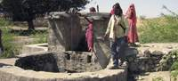
En lo alto de un monte, la alcaldesa de Vijaypura, en el Rajastán indio, se felicita por el logro del mayor plan de empleo rural del mundo, que ha llenado de árboles y vegetación lo que era un entorno pedregoso y semiárido.
Vijaypura es uno de los lugares donde funciona bien la Ley Nacional Rural de Garantía de Empleo Mahatma Gandhi (MGNREGA) de la India, que estipula una paga de 2,4 dólares diarios por un máximo de cien días trabajados en obras públicas no especializadas del campo. Con ese programa, cuenta la alcaldesa del pueblo, Rukmani Devi Salvi, los campesinos han pasado años cavando zanjas y construyendo presas y pozos para conservar el agua, y han pavimentado caminos de los alrededores.
"Nuestra tierra es muy mala, pero ahora tenemos hierba para los animales y hasta lagos", explica, mientras señala fosas, matorrales y un pozo recién construido en el que campesinas vestidas con saris coloridos se esfuerzan por sacar cubos.
El plan MGNREGA fue aprobado en 2005 y solo este ejercicio se han beneficiado de él casi 38 millones de hogares indios, aunque son frecuentes las críticas por el gasto (8.800 millones de dólares este año), la corrupción o su efecto sobre la inflación en el campo.
Volver a estudiar dónde es necesario
"El Gobierno tiene que volver a estudiar la aplicación del plan y ver dónde es realmente necesario. Han pasado cinco años y es fácil saber dónde hay corrupción y dónde no", cuenta a Efe el funcionario del programa en la zona, Raj Kumar Ji Banjara.
Pero en Vijaypura, dicen los aldeanos, el MGNREGA sí que funciona, en parte porque cada gasto es pintado escrupulosamente a brocha en las paredes del ayuntamiento para que todos sepan en qué se gastan los fondos asignados.
En la zona tiene su cuartel general el sindicato liderado por la influyente activista Aruna Roy, el Grupo de Poder del Trabajo Campesino (MKSS), que fue fundamental para la aprobación del MGNREGA y de la ley de derecho a la información (RTI). Roy llegó aquí como funcionaria del Gobierno en 1987, y luego abandonó su empleo para dedicarse por entero a la zona, muy pobre, escenario de frecuentes sequías y donde que se quedó a vivir en una sencilla casita situada en la aldea de Devdungri.
Desde su hogar (de adobe, sin agua corriente) Roy y los activistas del MKSS iniciaron una campaña contra la corrupción que cristalizó con la aprobación de la ley de derecho a la información, y luego capitanearon la puesta en marcha del MGNREGA.
"El empleo básico de cien días al año quiere decir dignidad, respeto, participación en la democracia. El MGNREGA es fuerte gracias a la ley de información, porque ahora tenemos derecho a hacer preguntas al Gobierno", dijo a Efe Roy en Delhi.
Las altas tasas de crecimiento de la India en esta década han beneficiado sobre todo a las élites urbanas, pero 833 millones de indios (el 69%) viven en el campo y la mayoría de ellos siguen ocupados en tareas agrícolas y con recursos casi de pura subsistencia.
El modelo de crecimiento se ha alimentado del sector servicios y las manufacturas, pero líderes y funcionarios indios asumen, sin saber muy bien cómo hacerlo, que se necesita un masivo traspaso de población desde el campo a la ciudad.
Ajena a esa cuita, la alcaldesa Salvi cree que el plan agrario es una bendición: en Vijaypura han comenzado a gestionar el agua escasa y con la naciente maleza algunos campesinos se han animado a comprar ganado, en realidad unas pocas cabras.
"Antes la gente no tenía trabajo. Pero ahora las mujeres han empezado a trabajar y tienen su propio dinero. Pueden comprar cosas, pueden comprarse bisutería o lo que les dé la gana. No dependen tanto de sus maridos", afirma de buen humor la alcaldesa.
"Es verdad que las cosas son más caras ahora, pero tenemos dinero para hacer más compras. La situación es mejor ahora", añade.
Ella misma, analfabeta y de casta "intocable", es signo de los cambios del campo: llegó a la alcaldía en 2010 a instancias de su marido y ex alcalde, Kalu Ram Salvi, que no podía volver a concurrir porque el puesto quedaba reservado a una mujer en esta legislatura.
Así que es Rukmani quien recibe a las visitas, y es su marido el que gestiona el papeleo y se lo da para que lo firme: "aquí todas las familias (explica él) tienen al menos una tarjeta de trabajo". Y luego, caminando por una de las pedregosas áreas de trabajo, apunta con orgullo a un grupo de ciervos, a lo lejos en la espesura, que beben en un abrevadero recién creado.
"Los campos de Vijaypura (concluye) eran casi un desierto, pero en esa zona, un día... ¡alguien vio un leopardo!".
2012-03-18T19:20:07Z
Brasil confirma el secuestro de dos de sus ciudadanas en Egipto
Brasil confirma el secuestro de dos de sus ciudadanas en Egipto
EFE
El ministerio de Relaciones Exteriores brasileño reveló que sus dos turistas fueron secuestradas junto a un guía local.
Ocurrió cuando los secuestradores interceptaron un autobús en el que viajaban 45 personas en la península del Sinaí.
Las negociaciones para la liberación de las rehenes "están en curso", según el gobierno de Rousseff.
El ministerio de Relaciones Exteriores de Brasil confirmó este domingo el secuestro de dos turistas brasileñas en Egipto, atrapadas junto con un guía local que les acompañaba en la península del Sinaí.Las negociaciones para tratar de liberar a las rehenes "están en curso", dirigidas por el ministerio de Interior egipcio y "seguidas de cerca" por la embajada de Brasil en El Cairo, explicó un portavoz de la cancillería brasileña.Al parecer, los secuestradores, que viajaban en un todoterreno, interceptaron el autobús en el que viajaba un grupo de cerca de 45 turistas brasileños en la zona de Wadi Firan, en el sur de la península del Sinaí, y se llevaron a las dos mujeres y a su guía.Las turistas regresaban a la capital egipcia después de visitar el monasterio de Santa Catalina, que está ubicado en el bíblico Monte Sinaí.El resto de los turistas está viajando a "un lugar seguro" escoltados por un retén integrado por policías y militares egipcios, según la cancillería brasileña, sin ofrecer otros detalles del suceso.
EFE
- El ministerio de Relaciones Exteriores brasileño reveló que sus dos turistas fueron secuestradas junto a un guía local.
- Ocurrió cuando los secuestradores interceptaron un autobús en el que viajaban 45 personas en la península del Sinaí.
- Las negociaciones para la liberación de las rehenes "están en curso", según el gobierno de Rousseff.
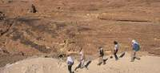
El ministerio de Relaciones Exteriores de Brasil confirmó este domingo el secuestro de dos turistas brasileñas en Egipto, atrapadas junto con un guía local que les acompañaba en la península del Sinaí.
Las negociaciones para tratar de liberar a las rehenes "están en curso", dirigidas por el ministerio de Interior egipcio y "seguidas de cerca" por la embajada de Brasil en El Cairo, explicó un portavoz de la cancillería brasileña.
Al parecer, los secuestradores, que viajaban en un todoterreno, interceptaron el autobús en el que viajaba un grupo de cerca de 45 turistas brasileños en la zona de Wadi Firan, en el sur de la península del Sinaí, y se llevaron a las dos mujeres y a su guía.
Las turistas regresaban a la capital egipcia después de visitar el monasterio de Santa Catalina, que está ubicado en el bíblico Monte Sinaí.
El resto de los turistas está viajando a "un lugar seguro" escoltados por un retén integrado por policías y militares egipcios, según la cancillería brasileña, sin ofrecer otros detalles del suceso.